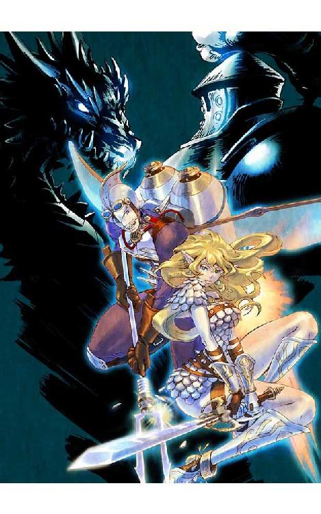
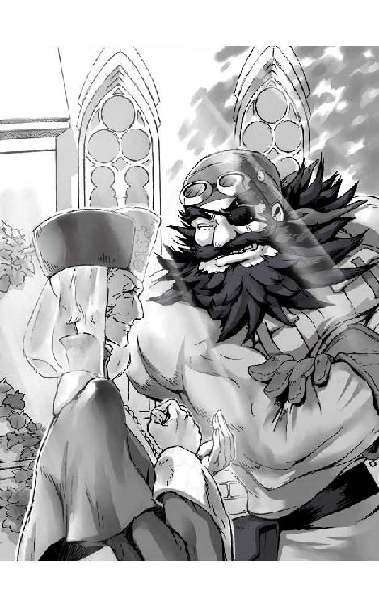
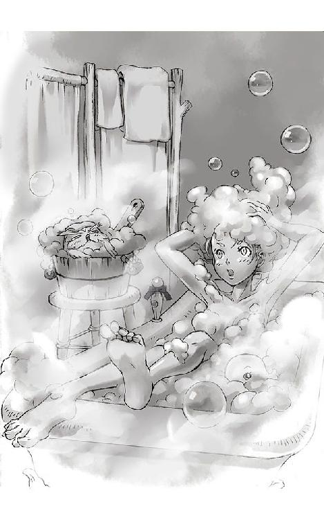
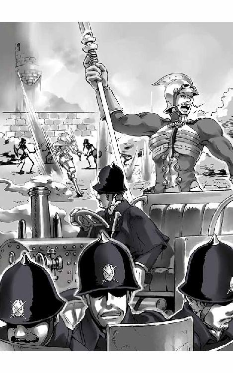
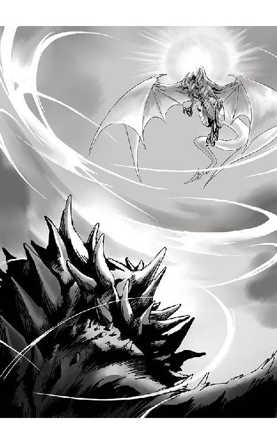

| 圧巻のグリモアール２ 蒸気伯爵と暗黒の竜 下巻 | |
| 町田 松三 | |
| Matsuzo Machida (2013) | |
灰と野バラ文庫
圧巻のグリモアール ２
『蒸気伯爵と暗黒の竜』 下巻
町田 松三
表紙イラスト・挿絵 加藤 美也子
目次
※この電子書籍は縦書きでレイアウトされています。
※ご覧になる環境、システムによって表示の差が認められることがあります。

辺境の地リルロックに集まった者たちが、それぞれの戦いをくりひろげていた頃......。
遠く離れたエレヴ大陸の南方。
穏やかな内海に面した自由貿易都市ベネスティアに、風の街道の盗賊ゴロンゴロンと彼が率いる黒熊一家の姿があった。
今日も陽光を反射させてキラキラと輝く海の上を、いくつもの船影がゆったりと行き来している。
漁師のあやつる小舟から外洋をわたる大型帆船、そして近海を警備する蒸気船と、実に様々な種類の船が交易や補給を行うためにベネスティアへ寄港するのだ。
古くから陸と海との中継地点として多くの人々で賑わうこの国の特徴は、なんと言っても町の中心に広がる巨大なバザールである。今も市場では食料雑貨はもとより、武器に珍獣、盗品から奴隷にいたるまで、ありとあらゆる代物が自由に取引されていた。
あまりに自由過ぎて中にはいかがわしい商売に手を染める者や、ほかで悪事をはたらき、ほとぼりが覚めるまではとまぎれ込んで来る者など、街は得体の知れない連中が集まる掃き溜めとなっていた。
それでも毎月売り上げの十五パーセントを「お布施」として上納すれば、どんな稼業だろうが、治安を乱さぬかぎり一切のお咎めなし。という「神の寛容」なる政策によって国は大いに栄えていた。
いつしか非合法な仕事に従事する者たちは、みな愛着をこめて、この都市を盗賊街と呼ぶようになった。
そんなベネスティアを治めているのはマシアス教の修道会である。
活気溢れる大きな貿易都市を、なぜ修道会が支配しているのかと言うと、その理由は簡単だ。ともすればすぐに己の利権に固執し、商売ガタキといざこざを引き起こすギルド連たちを抑止するには、神の力に頼って秩序を築くことが一番てっとり早くて効果的な方法だったのである。
もっとも、この数十年というもの、敬虔な修道士たちの生業にも大きな変化が生じていた。神に仕えながら、裏では盗賊たちに怪しい仕事を斡旋する輩がはびこるようになっていたのだ。
「まあ、ゴロンゴロンの親分！ おかえりなさい！ ああ、本当に良かったわ、みんな無事に帰ってきてくれたのね！」
隻眼の大きな髭ダルマを見るなり、女のようにか細いルピーヌ司祭は水差しを注ぐ手を止めた。花壇の前で立ち上がると引きつった笑みを浮かべる。
ずかずかと子分たちを従えながら海を見下ろす小高い修道院の敷地へ入って来たゴロンゴロンは、司祭の他に誰もいないことを確認するや、彼のえり首をぐいっとつかんだ。
「おうルピーヌ、相変わらず元気そうで何よりだ。ところで今度の不始末についちゃあ、礼を言った方がいいのか、それともイカサマをつかまされたお返しに、その脳天へ鉛ダマをぶち込んでやった方がいいのか、どっちだろうな？」
「や、やあねえゴロンゴロンたら！ もちろんお礼に決まっているじゃない。ピオを送り込んであげたのは、この私なのよ？」
「俺たちがくたばったかどうか、小僧に確かめさせるためだったんじゃねえのか？」
「ち、ちょっと、そんなことあるわけないでしょ。高い謝礼を払ってあの子を雇ったんだもの。私の自腹なのよ、自腹！」

冷や汗を浮かべて必死に笑う司祭を、ゴロンゴロンは突き放した。
「そうかい。じゃあ、礼を言わねえとな」
「いいのよ、いいの。私とあなたの仲ですもの。それにね、かわりの食料もたっぷり用意してあるから、いつでもマルコム爺さんの倉庫へ受け取りに行ってちょうだい」
マルコムと言うのは修道会と深い関わりをもつベネスティアの大商人である。この街の経済を掌握している大物だ。
「おう、そのことで相談なんだが。俺たちは機関車をなくしちまった。荷物を運ぶにしたって次の仕事を受けるにしたって、このままじゃ何も出来やしねえ。そこでだ、蒸気自動車を一台回してくれねえか。中古でも質流れでも何でもいい。とりあえず銀行強盗でもやって、金をかっさらってくるための足が必要だ」
「そ、そうねえ......」
「当面のリース料は、てめえのそのうさんくせえ命でいいだろう。どうだ？ あ？」
近づいたり離れたりしながら会話をつづける二人の姿は、さながら力はあるが頭のカラっぽな大熊と、悪知恵は働くもののからっきし体力のないラクダとの、間抜けなダンスのようである。
「ま、まあ、それぐらいなら何とかしてあげられなくもないけど......。なにか稼げる当てでもあるの？ ひとえに銀行強盗と言ったって、街の小商いから金を巻き上げるのならともかく、本気で大金を狙う大仕事は、とりあえずじゃ難しいわよ？」
首をかしげる司祭へ、髭ダルマは自信たっぷりに笑った。
「稼げる当てなら心配いらねえ。とっくに目星はつけてあらぁ」
「なによ？」
「リルロックだ。ちょいと調べてみたが、あのど田舎からは金の匂いがプンプンするぜ」
「あ、あんたまさか、ピオちゃんの仕事に首を突っ込もうって言うんじゃないわよね！」
「はあ？ なーにがピオちゃんだ。おめえやっぱり、仕事の発注先を顔で選んでやがんな？」
「ち、ちょっと待ってよ。ピオちゃんはね、偉いお師匠様の言いつけでリルロックへ向かったのよ。金儲けとか、そんなんじゃないんだから。そりゃあ、あそこには秘宝やら財宝やらが隠されてるっていう言い伝えはあるけどさ......」
慌てるルピーヌ司祭を笑い飛ばすと、ゴロンゴロンはささやいた。
「フフン、今度は騙されねえぞ。俺たちはな、そのリルロックに伝わるお宝を頂戴するのよ。金銀財宝をたんまりとくすねて、新しい蒸気機関車を買うんだ。そんでよ、戦車みてえに改造してな、今度こそ蒸気伯爵に一泡吹かせてやるのさ！」
近づくゴロンゴロンのもじゃもじゃヒゲを、ルピーヌ司祭は長い人差し指でそっと押し戻した。
「あらまあ、とんだ逆恨みだわね。って、そんなことはどうでもいいのよ」
「なんだとぉ？」
「私はね、スチームカウントでも何でも、好きにちょっかいを出してあんたがのたれ死のうがどうなろうが、そんな事は知ったこっちゃないの。でもね、ピオちゃんの邪魔だけはしないでちょうだい。絶対に。絶対によ。もし私までとばっちりをくって、嫌われちゃったら大変だもの」
「うるせえっ、このオカマ野郎！ 俺ぁ、この耳でしっかりと聞いたんだよ。あいつの仕事は幽霊退治なんだろ？ お宝とは関係ねえ。とにかくだな、さっさと車を用意しろってんだ！」
大きな顔を何倍にもして抗議するゴロンゴロンに背を向けたルピーヌ司祭は、空を見上げながら何やら思案をめぐらした。物事の損得勘定については誰よりも抜きん出た才覚を持ち合わせている男だ。いやオカマだ。
「お、おい、聞いてんのか！」
「へっへーん、いいこと思いついちゃった！」
掌の上でこぶしをポンと打ったラクダは、腹黒い笑みを浮かべると単純な熊へふり返った。
「いいでしょう。車ならすぐに用意させるわ。ただしね、ひとつだけ条件があるの。それをのんでくれるって約束してちょうだい」
「条件？」
「あのね、私からの手紙を、あの子にとどけて欲しいのよ。それでね......」
大人しく耳を寄せるゴロンゴロンに向かって背伸びをした司祭は、何やらひそひそと小声で囁いた。
「ふんふん......。ふんふん......」
青空の下に広がる内海には、カモメの鳴き声が響いていた。
突然、バシャバシャと顔に水しぶきを浴びせられ、ピオは意識を取り戻した。
重たいまぶたが開かれ、しだいに焦点が合うと、まん丸い目をしたコノハズクが自分を心配そうにのぞきこんでいるのが見えた。
綿菓子のように膨らました身体を激しく揺らし、懸命に水をかけて相棒を起こそうと奮闘していたキルウィドは、ピオが目を覚ました喜びにポッポーッと鳴いて飛び回った。
彼が倒れていたのは薄暗い洞窟の中であった。
どこか遠くから、川のせせらぎが聞こえてくる。
はたと思い返し、上体を起こしたピオは、まわりの地面にうずたかく積もった灰の山を見た。
それは、炎に焼かれ灰燼に帰した蟲たちのなれの果てであった。
彼はよろよろと立ち上がり帽子をかぶり直した。
「どうして、こんな......」
自分が生きた闇にのまれ、キール城の玉座の間から暗い穴に引きずりこまれたところまでは何となく覚えている。蟲たちに圧迫され、呼吸も出来ない状態で意識を失ったのだ。
「あのあと、どうなったんだっけ......」
彼の疑問にキルウィドが鳴きながら複雑なジェスチャーで答えた。
「なになに？ ヒューッと落っこちてきて......シュボって燃えて......、燃えては一旦こっちにおいといてー。まずは身体がピカッて光った？ 慌ててマントから外を見たら、虫がみんな燃えちゃってた......。そう言うこと？」
「ピーポー」
小さな身体を大きく使って事の顛末を説明し終えた相棒は、思慮深く翼を組んでうんうんと頷いた。
どうやら、落下中に何らかの魔法が発動し、二人は難を逃れたと言いたいようだが、まったく自分の行動に覚えがなく、ピオは首をかしげた。
おそらくここは城の地下の奥深くだろう。邪悪な意思によって運ばれ、蟲どもの餌食となるところだったはずがどういうわけか助かった。
少年は辺りを見回したが、どこにも自分を救ってくれたような存在は感じられなかった。むしろ、妖気の密度は城内とはくらべものにならぬほどに濃くなっている。無事に生き延びた理由はわからなくとも、ここに留まりつづけるのが危険なことはすぐにわかった。
「行こうキルウィド。まずはこの洞窟から脱出するのが先決だ」
綿菓子はブルブルと震えて水たまりで濡らした身体の水気をきると、いつもの定位置である相棒の帽子の上へとおさまった。
ピオは鉛のように重い身体に鞭を打ち、出口を捜すために歩き出した。
ゴツゴツと岩肌が突きだした洞窟の中は暗く湿っていた。
どこからか差し込むわずかな光が、ほんのりと足もとを浮かび上がらせているだけで、闇に溶けゆく先は何も見ることができない。
少年は拾った棒きれに布を巻き付けると固形燃料を塗り松明を作った。呪文を唱えて火をつける。メラメラと燃え上がる炎が周囲の地形を照らし出した。
明るくなってはじめて気がついたのは、そこは洞窟と言っても、ちらほらと人の手が加えられた形跡がある場所だということであった。昔まだ城に人間が暮らしていた頃、地下を何かに利用していたのだ。もっとも、こんな場所の使い道など、あまり褒められたものではないのだろうが......。
その証拠に、少年はいたるところに転がっている白骨を見つけた。おそらく罪人や政争に敗れた貴族など非業の死をとげた者たちだろう。言うなれば、いま自分が立っているところは何百年も続いてきたキール城の暗部なのだ。
顔をしかめたピオは、水音を頼りに歩き出した。
しばらくして闇の中に横たわる小川へぶつかると、流れにそって進路を変えた。
「この川を下って行けば、きっとあの滝に出るはずだ」
「プポポ」
小川は岩の間を蛇行し、たまに上から差し込む光で青く光った。
どれほど歩いたであろうか。
しだいに天井は低くなり足場も狭まった。ずっと腰を屈めた状態で進んできた少年は、勢いを増す急流のわきをくぐりぬけると、突如として開けた巨大な空洞へたどり着いた。
広い空間に流れ出た川は鍾乳石で出来た段差をつたい、いくつもの支流のひとつとなって眼下に横たわる青い地底湖へ合流していた。
地底湖を見下ろせる崖で立ち止まったピオは、ここが断崖から流れ落ちる大滝の源であることを知った。
神秘的に広がる地底湖から溢れた水が一筋の激流となって巨岩の間に消えていく。そして、その先からは夕焼けと思われる赤い光がかすかに差し込んでいたのだ。
出口を見つけて安心したピオは、よろよろとへたり込んだ。
頭から膝の上に飛び降りたキルウィドも、もふもふと安堵の表情を浮かべる。
「よかった、どうやら外に出られそうだよ」
「ポッポーッ！」
水筒の水をあおって額に浮かんだ汗をぬぐった少年は、近場の岩陰に身を寄せると、腰の鞄からりんごとビスケットを取り出した。銀の短剣で食べやすい大きさに切り、嬉しそうに大好物の果物を凝視しているキルウィドに与える。
綿菓子は、小さな身体を上下に揺らしながら美味しそうにりんごを食べた。
ピオもビスケットをかじる。半日近く何も口にしていなかった二人は、あっという間に持っていた食料を平らげた。
喉を癒やし腹がふくれると気持ちは随分と楽になった。あとは魔力の回復を待って、滝の出口から西の果樹園へ降りればいいだけだ。そこに戻りさえすれば、毛布にくるまってぐっすりと眠れる。
ピオは、リラックスしながらゆっくりと立ち上がった。せっかくだからこの空洞を探検してみようかと思い立ったのである。
つかんだ綿菓子を頭の上に戻そうとしたとき、突然、上の方からギヤーッ！ と恐ろしい咆哮が響きわたった。
動転した二人は、たまらずキョロキョロと辺りを見回した。しかし、どこにも声の主らしき姿は見つけられない。
再び、ギヤーッと耳をつんざく叫び声が轟いた。
とっさに身構えたピオは背後の断崖を見上げた。咆哮は、その岩場のずっと上から聞こえてきたのだ。
「あそこからだ......」
高い天井に迫る崖の頂上部分をピオは指差した。二十ヤーデルはある高さだ。
「よし、キルウィド。何があるか見てきてよ」
少年は左手に止まった相棒に言った。しかしキルウィドは無表情に黙りこんだかとおもうと、みるみるうちにほっそりと身体をちぢめた。それは梟が自分の身を守るときに行う防衛姿勢で、怖いから嫌だ。という意思表示に他ならない。
「あ、そう......」
綿菓子から白いバナナに変わった相棒の姿にピオも無表情になった。彼はキルウィドを頭に乗せると、足場を確かめながら慎重に崖を登り始めた。
短く走った亀裂に指を入れ、わずかに突き出た凹凸に足をかける。身体を引き上げたら、また次の手掛かりを探す。本来なら魔法でふわりといきたいところだが、今は予期せぬ事態にそなえて魔力は少しでも温存しておきたかった。
冷や汗ものの岩登りをなしとげ、ついに頂上へはい上がったピオは、目の前に広がる光景に思わず息をのんだ。
キルウィドもまん丸い目を見開き、より細いバナナになった。
崖の上は、奇岩がつくりだした天然の祭壇であった。
平らな壇上をとり囲むように、鋭い鉤爪の形に湾曲した岩が何本も突きだしている。それはまるで、今にも捧げられた生贄をにぎりつぶそうとする悪魔の手のようだ。
だが二人の目を釘付けにしたのは、祭壇の形状などではなく、その中心に横たわっていたモノであった。
祭壇の上には、一頭の竜がいた。
竜は、ぐったりと身体を寝かせて力なく侵入者を見つめていた。首には大きな氷の輪がはめられ、傷ついた鱗は生来の輝きを失っていた。
「黄金のドラゴンだ......」
ピオは尻もちをついた格好でつぶやいた。
これまで師と旅をしてきた間にドラゴンとは何度も遭遇したが、こんなに間近で見るのは初めてだった。しかも威厳と力に満ちた猛々しい姿ではなく、今にも死にそうなほどに弱りきっている。
金竜の目からこぼれた涙が小さな金剛石となって岩場を転がり地底湖へ落ちた。
ピオはその波紋が広がる様子を呆然と見下ろした。
「この感じは......！」
青く透き通った水の中に沈んでゆくダイヤが、竜の嘆きを川の流れに滲ませて、はるか下の滝つぼまでおくりとどけているのだ。
次の瞬間、少年は我知らずのうちに祭壇をかけ上がると、ドラゴンのかたわらにしゃがみ込んでいた。五ヤーデルほどの大きさの竜は、百年ぶりに見た人間に向かって小さく吠えた。今度のギヤーは、まったく精気のない声だった。
「安心して、俺はピオ。こっちはキルウィド」
魔法使いの弟子は竜に強い呪いがかけられている事を見抜いた。それは、すべての力を奪い去った上で、瀕死の状態のまま永遠に生かし続けるという残酷なものであった。
ピオは優しく触れながら竜の身体に傷がないか調べた。この手の呪いは内側から肉体を弱らせるために蟲を飲ませたり魔法のくさびを打ち込むことがあるからだ。
弱々しく抵抗するのもおかまいなしに、金竜の口に顔を突っ込み、尻の中まで注意深く調べた。
「やっぱり腹の中に何かいるな。あとは、この首輪か......」
一通り検診を済ませたピオは、金竜の首すじをさすりながら、まじまじと祭壇を見回した。
天井から下がった無数の鍾乳石が、鈍く光る鉤爪岩の青色をぼんやりと反射させていた。
ピオは師から聞いた伝説を思い返した。おとぎばなしの通りなら、リルロックの城主が滅ぼされたときより百年もの長い時間、金竜はここに閉じ込められていたことになる。
「君は、俺らの気配を感じて必死に叫んだんだね？」
ぺたりと床に首を落とした竜は、心細そうに低く唸った。
「とても強力な呪いだから、今の俺に解けるかどうかわからないけど、出来るかぎりのことはやってみるよ。だから、苦しくても、もう少し辛抱するんだ」
ピオは祭壇のまわりに聖水を垂らし、魔物よけの時よりも複雑な魔方陣を描いた。
すでに、この祭壇自体が強力な呪術の結界であるから、自分の魔方陣がどれほどの効力を発揮するのかも予測できない。それでも持てる力のすべてを使って、この呪いを祓うことに挑戦するのだ。
祭壇の上に戻ったピオは帽子ごとキルウィドを床に下ろすと、荷物を置き、着ている服もすべて脱いだ。そして、右手で銀の短剣を抜き放ち、かるく深呼吸をして息を整えた。
何事かと目をしばたたかせている金竜の前で、少年は静かに呪文を唱えはじめた。
やがて、青い闇の中で細い身体は光りを帯びはじめ、褐色の肌の上には輝くルーン文字が浮かび上がった。
文字は腕や脚のまわりを回転しながら切り替わり、胸と背中には不思議な紋章や幾何学的な図形が幻灯機に映し出されたように再生されていく。
黒髪は陽炎に逆立ち、かたく閉じられた瞳の上では眉がわずかにつり上がった。
めまぐるしくうつり変わっていくルーン文字が目的のページを見つけて静止すると、今度は光の奔流となって少年の身体から空間へ溢れ出た。宙に浮かんだ文字列の数々は竜巻のごとく彼のまわりでうねり、激しい明滅を繰り返しながら足もとの小石を巻き上げた。
詠唱する声がさらに強さを増し少年が赤く光る眼を開くと、文字列の中からいくつもの絵記号が拡大され、竜の身体を覆う六面体のキューブを形成した。キューブは魔道書のページが進むにつれ生き物のように八面、十六面、三十二面と形を変えていき、最終的には完全な球体となった。
魔球につつみこまれた竜の身体が、わずかに浮いた。
ルーン文字の嵐をまとって立つ少年は、竜の見ているまえで自分の手首を切った。
赤く輝く鮮血を竜の口へ流し込む。竜は舌ですくうようにそれを飲んだ。
すると次の瞬間、激しく身体をのたうちまわらせ、耐え難い苦しみに悲鳴を上げた。
少年からはなれた文字の竜巻が一斉に竜の身体に巻き付き、暴れる四肢をおさえつけた。
必死の叫びが魔球を鳴動させる。
痙攣した竜は口を大きく開くと、ついに腹の底に巣くう大蟲を吐き出した。
ピオは傷の消えた左手を突き出すとそれをつかんだ。苦しみもがく蟲をしっかりと握り、絶対に逃がすまいと念を込める。たちまち蟲は燃え上がった。
蟲を吐き出して動かなくなった竜に近づいた少年は、左手につかんだままの火の玉を思いきり氷の首輪に叩きつけた。
業火に焼かれ断末魔を上げる蟲とともに、氷のいましめが砕け散る。
呪縛から解放された途端、竜の身体は強く輝き、本来の大きさを取り戻した。
力強い波動が祭壇の鉤爪岩を粉砕し、空洞全体を揺るがした。
「ポッポーッ！」
じっと固唾をのんで見守っていたキルウィドが歓喜の声を上げた。
見事に呪いを打ち破ったピオは、役目を終え、美しい残光を降らせながら消えていく魔球の下で金竜の首に抱きついた。
「よかった、うまくいったよ！」
そんな少年を、竜も優しい目で見つめた。
ほどなくして岩肌を震わせていた振動がおさまり、静寂が戻った空間に再び滝の音が響きはじめると、ピオはマントだけを肩に羽織って金竜によりそった。
「あとは夜明けまで眠るんだ。まずは体力を回復させなくちゃ」
竜のひたいを撫で、帽子と綿菓子を引き寄せた少年は、ぴたりと添い寝をして呪文を唱えた。
少年の身体がほんわかとした優しい光を発し、冷えきった竜の身体を温めはじめた。
竜の力が解放されたせいか、洞窟の中からは潮が引くように妖気が消えた。
身体を丸め全身でピオを包んだ金竜は、頬ずりをして目を閉じた。マントと帽子にはさまれて居心地のよいベッドを手に入れたキルウィドもパチッと目を閉じる。
疲れ果てたピオは、心地よい疲労と達成感で満たされていた。
三つの鼓動がたがいの肌を通して感じられると、一人と一頭と一羽は、たちまち深い眠りに落ちていった。
突然、バシャバシャと顔に水しぶきを浴びせられ、ピオは意識を取り戻した。
重たいまぶたを開き、しだいに焦点が合うと、竜の鼻先に止まった、まん丸い目をしたコノハズクが自分を楽しそうにのぞきこんでいるのが見えた。
「また、この起こし方か......」
外はすっかり朝になったのだろうか。最後まで寝ていたピオは、まだ眠たい目をこすりながら上体を起こした。両手をいっぱいに広げ大きく伸びをする。
金竜は大きな顔をよせると少年におはようの頬ずりをした。一晩中浴びつづけた彼の魔法のおかげで、体力は見違えるほどの回復を見せていた。まだまだ完全ではないが昨夜の百万倍は精気がみなぎっている。
「あはは、よしよし、おまえも元気になったんだね」
「クルルゥ」
身体全体で抱き止め、ピオも頬ずりをした。
「さあ、ここから出る準備をしなくちゃ」
そう言うと、散らかった服を着て荷物をまとめはじめる。
大人しくその準備が終わるのを待っていた金竜は、支度がととのった少年の前に自分から首を下ろした。
「乗せてくれるの？」
「グルルゥー」
そうだと言わんばかりに尻尾で地面を叩き、大きな翼を広げ羽ばたいてみせる。
巻き起こった風に少年は帽子を押さえて微笑んだ。
ピオは首の上に飛び乗ると、艶をとりもどした鱗を撫でた。
「いいよ！」
少年の声に、金竜は勇ましい雄叫びを上げた。
崖の上から踏み切り、地底湖へ向かって飛び降りる。
勢いがついたところで翼を広げ、水面すれすれを急上昇した。
あまりのスリルと迫力に思わずピオは声を上げた。
スピードに乗った金竜は、そのまま地底湖から流れる川にそって巨岩の狭間に突っ込んでいった。岩場すれすれを巧みに縫い、やがて陽光の溢れる洞窟の出口へとたどりついた。
「やったーっ！」
滝の流れ落ちる岩穴から一気に外へ飛び出した金竜は、陽の光を浴びてキラキラと輝いた。それは百年ぶりに甦った、美しい神獣の姿であった。
「ギヤーーーッ！」
金竜は天に舞い上がると気持ちよさそうに咆哮を轟かせた。
目を回しそうなキルウィドを抱きかかえ、ピオも喜びに手を突き上げる。
高度を上げ、リルロックの上空を悠然と旋回するドラゴンは、しばらくして西の果樹園へ降下して行った。
地面に降り立ったピオは、名残惜しそうに鼻を鳴らす金竜の首を撫でた。
「送ってくれてありがとう。俺たちはまだやる事があるからここでお別れだ。もう、おまえは自由だから、気をつけて竜の国へ帰りな」
キルウィドも頭の上で小さな翼を振った。
金竜は最後に少年にキスをすると、大きく羽ばたいて空に昇った。
聖なる輝きに守られて飛ぶ美しい竜の姿を、ピオはいつまでも嬉しそうに眺めていた。
今日も空には水底のような重たい霧が広がっている。
たまに森の梢をゆらして飛びたつ小鳥の群れも、どこかおびえた様子だった。
ポラン村の広場、自警団本部の二階。
窓辺によりかかったゲルハルトは、ウイスキーの入ったグラスを片手に、ぼんやりと外を眺めていた。まだ昼間だというのに三杯目のストレートだ。
昨日、黒騎士との死闘を終えた王立警察隊は、ガタガタになったオルキデをなんとか走らせ這這の体で村へ帰って来たのである。
視線を落とした先では、前部の装甲板や駆動系をはじめ、あちこちにダメージを負った移動城砦の修理が今も目まぐるしくつづけられていた。彼にとって、かろうじて救いだったのは、艦の心臓部である蒸気エンジンとポルックスが無傷だったことだ。
しかし、ゲルハルトの気分は最悪であった。
どうにも解せない事が起きたからだ。
黒騎士に散々な目に遭わされボロボロになったオルキデを見た村人たちは、大国の軍隊でさえキール城を守る化け物にはかなわぬのかと失望の声をもらした。
ゲルハルト自身、決して油断したわけではなかったが、相手が予想をこえた強敵だったのは確かで力押し以外に作戦を練り直す必要性を痛感した。
士気は落ち、沈んだ空気の中で、当番の隊員たちは夜間の警備についた。
ところが、一夜明けて村人たちの態度は一変した。
昨日は期待はずれ半分、ねぎらい半分で彼らを出迎えた村人たちだったのが、今朝がた起きた出来事を機に、再びスチームカウント遠征隊への熱が高まったのだ。
その出来事とは、夜明けのリルロックに黄金の竜が飛ぶ光景であった。
天下のスチームカウントが怪物黒騎士をこらしめたおかげで、伝説の中で死んだと語られてきた黄金の竜が甦った！ ......と、村中が大騒ぎになったのである。
無論、自分とは全く関係ない。ゲルハルトにはよくわかっている。
しかし、嬉々として喝采を贈られ感謝に腕をつかまれると「いや、違うのだ」の一言を切り出すことが出来なかった。現に、そのおかげで、オルキデの修理や怪我人の世話を村人たちは献身的に手伝ってくれているのである。
「はあ、まずはじっくりと策を練るさ......」
窓辺に頰づえをつきながらつぶやくと、彼はまたグラスをあおった。
しばらくして、ガランとした室内にノックの音が響いた。
ほどよく酒がまわり、うつらうつらしていたゲルハルトの前にガルドーニとサラが姿を現した。
「おう、二人ともご苦労さん」
立ち上がったゲルハルトは、空になったグラスに四杯目を注いだ。
「ゲルハルト様、オルキデの修理状況ですが、あまりかんばしくありません」
「どんな感じだ？」
「ひと通り点検を終えたアルフォンスからの報告によれば、機関部、外装部に問題はないそうですが、やはり左前輪部のサスペンションの損傷が致命的だそうです。現状では登坂はおろか、長時間の徐行にも耐えられぬとの事」
「ふむ、そいつは困ったな」
「村に腕のよい鍛冶屋がいたそうで、その者の手を借りて修理にあたっていますが、完全に直すためには本国の大工房へもどさねば難しいようです」
「そうか......。では修理を最優先に進めながら、オルキデは村の防衛に専念させろ。次の調査隊の派遣は明日以降だ。それまで兵たちにも交代で休息を取らしてくれ」
指示を出しながら再び窓際の椅子に腰を下ろす。
「かしこまりました」
それにしても、とゲルハルトは、テーブルの上に乗っているフルーツ皿から野いちごをつまんでいる妹をじろりと見た。
戦闘服の上半身をはだけ、腰の低い位置で袖を結わいたサラは、真っ平らの胸を隠している小さな下着が丸見えであった。
「なんだその格好は。おまえには恥じらいというものが無いのか？」
いつぞやと同じ言葉をかけられ、少女は野いちごをかじったまま兄の方を向いた。
「ずっとハンガーの中にいたからもう暑くて暑くて。汗びっしょりなの」
「そういうことではなくてだな」
「安心して。ポルックスなら整備は万全。いつでも発進できるから」
「ああそう」
軽く酔いがまわっているせいか、今日のゲルハルトは道徳心について厳しく言及もせず、どこか眠そうな目で妹にうなずいた。また一杯酒を口に含む。気持ちよく喉から鼻にアルコールが抜けていく感覚に、彼は満足げに笑った。
「それでは対黒騎士についての作戦はのちほど軍議を開くとして、次の調査隊の編成は、車輌二とポルックスで準備を進めて参りますが、よろしいですね」
「ああ、いいよ。それで頼む」
「御意」
うなずくガルドーニから視線を外し窓の外へと顔を向けたゲルハルトは、ひじをかけた窓枠にいつの間にか止まっていた白いコノハズクと目が合った。
しばしの間、至近距離で見つめ合う。
コノハズクはキリッとした表情を浮かべた。
対するゲルハルトも眉尻を上げ二枚目の顔をつくった。酒のおかげで頬が赤い。
「君は......、先日の小鳥さんだね？」
「ポッポポ、ポ......」
重々しく尋ねた伯爵の声に、コノハズクも重々しい鳴き声で答えた。
「ヤダなにこれ、ちょー可愛いーっ！」
横から電光石火の早業でコノハズクをわしづかみにしたサラは、驚いてバサバサと暴れる小さな身体を両手で握りしめた。
自分を見つめる少女のどアップに圧倒され、コノハズクは金縛りにあった。
「そいつは、この前も窓の外から私のことを見つめていたのだ。小さいが実に凛々しい顔をしておるだろう？ もしかしたら、大ディダロスの蒸気伯爵ここにありと噂を聞きつけた森の賢者が、ひそかに会いに来たのかもしれんぞ」
「本当。兄様なんかより、よっぽど賢そう」
「なんだと？」
「ううん、何でもないわ。金色の竜に白いフクロウ。本当に今日はいろんなものを見る日ね！」
サラは満面の笑みでコノハズクをあやした。
掌の中で息づく綿菓子は、まんざらでもなさそうに目を細めている。
「そう言えば、夜明けに現れたという竜の話ですが。村の者たちは、みな伝説の救世主と信じて疑っておりませぬ。......しかし、その出現に一体どのような意味があるのでございましょう。竜の復活と私たちが城へのぼった事との間に、何か因果関係があるとも思えませぬ。さすれば、なにか吉凶の予兆でありましょうか？」
「それだよガルドーニ。私もずっとそれを考えていた。しかし、どれほど考えてみてもサッパリわからんのだ」
ゲルハルトは頬づえにあごを乗せてウイスキーを舐めると、窓から外の景色を見た。 リルロックの山頂は霧に隠されていて見えない。
「ありがたがる連中の言うとおり金竜が土地の守護神ならば、さっさとこの薄気味悪い霧を吹きはらって、村に平和を呼び戻してくれても良さそうなものだが、そうはなっておらん。むしろ、霧は濃さを増したような気さえする」
「私めも同じ疑念を抱いております。今宵から魔物どもの襲撃が弱まるか、じっくり見極めるのが肝要ですな」
「そのとおりだ」
「わかりました。当番の者たちには注意するよう念を押しておきましょう」
「頼む」
軽く会釈をしてくるりと背を向けたガルドーニにつづいて、小皿にフルーツを山盛りくすねたサラも綿菓子を左手に握ったまま部屋を出ていった。
二人を見送ったゲルハルトは深く椅子にもたれかかると、苦手な考え事は中断し、すっかり気を楽にしていびきをかきはじめるのであった。
サラは本部を出たところで多忙な参謀と別れ、宿屋の二階に用意された自分の部屋へと向かった。すれ違う隊員たちや村人に笑顔をふりまくのを忘れない。
彼女が宿屋の扉を開けると、すぐに世話係という大役をおおせつかった女主人が出迎えた。
「お帰りなさいませ、サラ様」
「お風呂に入りたいのだけれど、部屋のバスタブへ湯をはってもらえるかしら。もう身体中がベタベタ」
「承知しました。すぐに支度をしますのでちょいとお待ち下さいよ」
恰幅のよい女将は笑顔で答えた。彼女は店の歴史はじまって以来の上客に、塵ひとつの失礼も無いよう家族総出で世話に当たらせていた。幸い他に逗留客はいなかったから、どんな言いつけにも迅速に対応することが可能だった。
サラは、質素だが清潔な部屋に戻るとコノハズクをテーブルの上に降ろし、持ってきたフルーツを食べさせた。
ここ最近、相棒から与えられていた干からびた食料とは違うご馳走に、コノハズクは大喜びで舌鼓を打った。
「どう、美味しい？ 全部食べて良いのよ、ほら、あーん」
「パーン」
「ウフフ、おまえ名前は何て言うの？」
「ピプピィポ！」
「ピポピポね！ どこから来たの？ 本当に森の賢者なの？」
「ピポポ、ピポポ。プップー」
「違うの？ 何言ってるかわからないけど、お腹は空いてるみたいね」
「ピッポピッポ」
「よーし決めた！ 今日からおまえを私のペットにしてあげるわ！ どう？ 素敵でしょ？」
「ペッポ？」
「そうよー。一緒にいれば毎日美味しい物をたーんと食べられるんだから」
「ポッポーッ！」
サラは、燃え上がる暗黒街を背に、鋼鉄の巨人を従えた正義のヒロインと、その肩に乗るピポピポの雄姿を想像してはしゃいだ。正体を隠すため、二人とも目元にはおそろいのマスクを付けている。
こうして少女と綿菓子が楽しいひとときを過ごしている間に、風呂場のバスタブは運ばれてきた湯で満たされた。こちらまでハーブで作られた香油の清々しい香りが広がってくる。
「さあ、お風呂に入りましょう。あなたの身体も洗ってあげる！」
入浴の準備が整うと、サラは着ている服を脱いだ。
満腹になってちょこんと座っているコノハズクの前で生まれたままの姿になった彼女は、また綿菓子をつかむと鼻唄を歌いながら浴室へ姿を消した。
午後の風がそよぐ村はずれの牧草地で、ラナは放たれた羊たちの番をしていた。
今朝、彼女はこの場所で天に昇る黄金の竜を目撃した。
それは絵本に描かれていた伝説の竜にそっくりで、ほんの短い時間だったが優雅に空を翔る姿に目を奪われた。頭から生えている角の間に人の姿が見えたような気がしたが、はっきりとはわからなかった。
半月前からはじまった不思議な出来事の数々は、平凡な毎日を過ごしてきたラナの心を大きく揺さぶった。今も彼女は、自分の身に起こった奇跡の数々を、ぼんやりと思い返しているところだった。
「寒くないか？」
大石の上にうずくまる少女が声のした方へふりかえると、野うさぎを仕留めたオーロが森の中からこちらへ歩いて来るのが見えた。
「オーロ！」
「どうだ、二羽も捕れたぞ。今夜は豪勢な晩飯だ」
まさかりのかわりに長弓を背負った巨漢は、自慢げに獲物をかかげて見せた。
「すっごーい！」
少女は感嘆の声を上げて石の上に立ち上がった。
だが、それ以上に彼女が目を丸くしたのは、オーロの後ろから現れた人影に気がついたからであった。
「やあ！」
木々の暗がりから抜け出た魔法使いの少年は、ラナに向かって微笑んだ。
「ピオ！」
大石を滑り降りたラナは、息を切らして二人のもとへかけて行った。
「どうして？」
再会の喜びの中、なぜ二人が一緒にいるのかと言う疑問に少女は首をかしげた。
「狩りの途中、西の果樹園で会ってな」
オーロは、笑いながら答えた。
「ビバークするのに丁度よかったから、あそこの廃屋を使わせてもらっていたんだよ」
「そっか」
納得したラナは、しかし、まだ不思議そうにピオの顔を見上げている。
「ああ、これ？」
どうやら少年は鼻血を出していたらしく、両方の鼻の穴に詰めた大きなちり紙が、せっかくの端正な顔を台無しにしていた。
「怪我をしたの？ 大丈夫？」
「うん、ちょっとね。いけないものを見ちゃって」
「いけないもの？」

「はは、いいのいいの何でもない。こっちの事だから......」
答えに窮した少年は、苦笑しながら赤く染まったちり紙を投げ捨てた。
「もう、大丈夫だし」
おどけた調子でフガフガと鼻の穴を膨らませてみせる。
「ほらね」
「あははははっ」
金竜と別れた後キャンプに戻ったピオは、村の様子を探るためにキルウィドを送り込んだ。昨日、分かれ道で見送ったスチームカウントの調査隊が、あれからどうなったのか気になっていたからだ。
例の魔法を使い、今回もまた相棒の五感を通してその状況を把握する事に成功したまではよかったが......。どう転んだらそうなるのか、ピオは予想外なものまで目撃する羽目になってしまったのだ。しかも、かなり刺激的な情景を。
「ところであんた、これからどうするんだ。本当に村に来るのか？」
「うん。捕まっちゃった相棒を助け出さなきゃいけないからね」
心配した顔をするオーロへ、少年はうなずいた。
陽が落ちると風の強い夜になった。
風は強いのに霧は濃いままであった。
吹かれゆく霧は渦を巻き、リルロックの山からふもとのロジェ湖、はてはポラン村までをすっぽりと覆い尽くしていた。
息苦しい妖霧がただよう村では、今夜もすべての見張り台にかがり火が焚かれ、当番の警察隊員と自警団員が歩哨に立った。
村を囲む電気柵もずっとフル稼働がつづいている。
黄金の竜が出現したというのに、山のざわめきと森にひそむ獣たちの遠吠えは、明らかに昨日よりも激しさを増していた。
それでもほとんどの村人たちは楽観的に気持ちを切り替え、天に昇った金竜が災いを終わらせてくれると安堵の眠りにつこうとしていた。
そんな夜のポラン村の片隅に、忍び込んだ人影がひとつ。
ピオは騒ぎになると面倒なので、こっそりと宿屋からキルウィドを連れ戻すことにしたのであった。
さすが大ディダロスの移動城砦。夜になってもオルキデのまわりでは、蒸気エンジンを回すために働く男たちの姿が絶えることはなかった。
自警団本部のわきにある物置の隙間に身を潜めていたピオは、呪文を唱えると小走りに広場を横切った。この姿を消す魔法は、わずかな時間しか持たない。効果が切れる前に手近に隠れられそうな場所を見つけ、また身を潜ませる。
王立警察隊の活動拠点となっている広場から目的の宿屋までは少し距離があった。
かがり火の照らさぬ闇を縫って宿屋の裏手へまわり込んだピオは、並ぶ木立の影から二階の窓を見上げた。まだ明かりのついているその部屋に相棒はいるはずだ。
「まったく、なんで帰ってこないんだよ......」
めずらしく愚痴をこぼしたピオは、また小声で呪文を唱え、ブーツのかかとを小さく打ち鳴らした。淡い光がこぼれ両足のくるぶしから小さな翼が生える。
そして少年は、音もなく大地を蹴った。
ひらりと舞い上がった身体が二階へと飛んだ。用心しながら窓辺に張り付き、そっと顔を覗かせてみる。幸いカーテンは閉じられておらず中の様子は丸見えだった。
いけない少女は、今はいないようだ。
「あ、あいつ！」
ピオの目がベッドの枕もとにあるサイドテーブルの上で止まった。
そこには大きなバスケットが置かれていて、ふかふかのタオルで作られた寝床にゆったりとおさまっているキルウィドの姿があった。のんびりとリラックスし、時たま横に置かれたフルーツを気怠げについばむ仕草は、さながらアジトでふんぞりかえるマフィアの大親分と言った風格だ。
「キルウィド、キルウィド！」
ピオは、窓の外から声を殺して手を振って見せた。しつこく何度もアピールするが、大親分は一向に気にした様子もなく、優雅にまどろんでいる。
「ちぇ、気がついてるくせに、こっちを見ようとしないや......」
ついに業を煮やしたピオは、窓枠を持ち上げると部屋の中へするりと入った。
その姿を見たキルウィドが急に目をパチクリさせ、小さな翼をばたつかせる。そして、どこから取り出したのかもわからぬ両端のとがったマスクをサッと目につけた。
「ピピパ、パペパペ？」
侵入者を冷静に見上げながら低い声で鳴く。
「なにが君は誰かね？ だよ。 迎えに来たんだ。ほら、さっさと帰るよ！」
無情にもヒーローのマスクをポイと投げ捨てられたキルウィドは、タオルにしがみついてイヤイヤをした。
大きな目をうるませ、ボクここんちの子になる！ と懸命に訴えかける。
「バカ、なに言ってるんだよ。さあ、あの子が戻って来る前に行くんだ！」
「ポーポッ」
運命には抗えぬと覚悟したのか、つかの間のセレブ気分に酔いしれていた綿菓子は最後の悪あがきとばかりにフルーツをガツガツと食べはじめた。ピオに引き離されても、なお、名残惜しそうにじたばたともがきつづける執念は、鳥ながらなかなか見上げた根性だ。
「パピパピパピーッ！」
「こ、こら、騒ぐなって！」
ごそごそといかがわしい音を立てながら両者が格闘している背後で、扉の開く音がした。
「はあ、さっぱりした......」
「え？」
ピオは、その気配に全身が総毛立った。
「ピポピポ、ちゃんと良い子で待っていたかしら？ 明日はいよいよ私たちもお城に行くんだから、今夜は早寝をしないとダメ......」
夜の入浴を済ませタオルで濡れた髪をふきながら部屋へ戻ってきた少女は、暴れるコノハズクを両手で押さえつけたまま凍り付いている少年を見た。
相手も、下着姿の自分へ目が釘付けになっている。
悠久たる時の流れが感じられた一瞬の間、少女は無言のままゆっくりとタオルをベッドの上に置き、かわりにバスローブを羽織ると前を閉じてひもをきつく縛った。
準備が整ったところで両手を口元へ持って行き、大きく息を吸い込む。
「ち、違う。違いますよ......」
少年は、あまりの窮地に声が出ておらず、ただ手をのばすのがやっとだ。
しかし、そんな彼の目をしっかりと見つめながら、少女は夜のポラン村を震撼させる悲鳴を上げた。
「キャーーーアアアァァァーーーーーアア、アアァーーーッ！」
こうしてピオのもくろみは外れ、事は最悪の事態へと発展していったのである。
たちまち、歩哨の当番から外れていた警察隊の全員が駆け付けて来たのではないかと思うぐらいの人数が宿屋の二階へ殺到した。
窓から逃走をはかったピオだったが、背後からマントをつかんで引き倒され、起き上がろうと四つん這いになったところを、馬乗りになったサラに呆気なく取り押さえられてしまった。
「ま、待って！ 怪しい者じゃないんだ！」
「レディの部屋に忍び込んでおいて、とんだ言い草ね！」
わめく少年の耳元に、少女はドスの利いた声で囁いた。
「ほ、本当だって、こいつを連れに来ただけで、俺は......」
「俺は何よ、この変態！ さあ、観念しなさい！」
そんな情けない姿でジタバタともがいているところへ、失礼します！ を連呼する隊員たちが我先にと雪崩れ込んできたのであった。
三十分後。自警団本部の一室。
後ろ手に上半身を縄で縛られたピオが椅子に座らされていた。
となりに置かれた椅子の上には、これまた縄です巻きにされたキルウィドがちょこんと乗っかっている。
「ピオとか言ったな。もう一度訊くが、貴様は何者だ？ つまらぬハッタリはやめて正直に答えるのだ。これが最後のチャンスだぞ」
ゲルハルトは腕組みをしながら不埒な侵入者を見下ろした。たった一人の大切な妹の寝室に忍び込むとは、八つ裂きにしてもあきたらぬ痴れ者である。彼ははらわたの煮えくりかえるのを必死に我慢しながら、つとめて冷静に話しかけた。
部屋の中には他にサラとガルドーニ、そしてアシモフ団長がいた。言うまでもなく廊下では武装した警察隊員たちがびっしりと待機している。
「さっきも言ったとおり、俺は時忘れのジルから命を受けてリルロックの調査に来ただけさ。あの子の部屋へ忍び込んだのは悪かったけど、これを迎えに行くためだった。他には何の用も無いよ。泥棒でも痴漢でもない」
「本当か？」
少年はうなずいた。
「本当に何もされなかったのか？」
今度は妹の方へとふり返る。
「まあ、乱暴はされなかったわ。その前に捕まえちゃったからね。でも捕まえるとき、揉んで抵抗したわ」
同じようにうなずくサラから、再び視線はピオへと戻される。
「揉んだのか？」
「揉んでません」
また妹へ。
「揉まれたのだな？」
「揉んだわよ。胸とかお尻とか。あちこち」
またまたピオへ。
「こう言っている、嘘をつくな。妹の身体が目当てだった事は明白だ」
「違うってばー、ひどい濡れ衣だ！」
「ちょっと失礼ね、違わないでしょうよ！」
うんざりした顔で答える少年に、むきになって少女は詰めよった。
「あなた私と目が合ったとき、じっと見たじゃない。とくにこのあたりとかこことか！」
サラは、ぺったんこな自分の胸や股間のあたりに手で円を描いた。
「ほ、本当に違うったら。急に戻って来たから驚いたんだよ。どうしていいかわからなくって！」
何か言いたそうな兄を押し退け、サラはつづけた。
「あっやしいわねー、大体、このピポピポがあなたのペットだって言うのも本当なの？ この子はね、私にとっても懐いてたのよ。ご飯を食べさせて、お風呂にだって入れて上げたんだから」
「知ってるよ」
「知ってる？ 知ってるってどういう事よ、どうして知ってるのよ！」
「え、ああ......、あの、その......、だってキレイになってるし。ほこりっぽかったのが、こんなに白くさ」
「そうよ。私が洗ってあげたんだから」
両手を腰に当ててサラは大きくうなずいた。
「あ、ありがと」
今度は一瞬、目をパチクリさせる。
「べ、別にお礼を聞きたいんじゃないの！ あなたね、私の身体目当てに忍び込んだって、どうして認めないのよ？ 正直に言わないと、本当にタダじゃ済まさないわよ」
「そ、そんなあ」
微妙に話の論点がズレ始めたことに困惑したゲルハルトは、熱くなる妹の前で人差し指を立ててみせると、小さくうなずきながら少年との間に割って入った。
「ちょっといいか、サラ。おまえの言っている事も大事な問題だが、今は彼の素性を確かめる方が先決だ。わかるな？」
「この子、ジルの弟子って言ってるじゃない」
「そうだが何の証拠も無いのだ。信用出来まい。私はこれまで大魔道師の弟子だと自称するペテン師どもを散々この目で見てきた。こやつも、このタイミングでリルロックに現れたのだ。もしかしたら我々の動きを探りに来た他国のスパイかもしれない。もしくは、財宝を奪いに来た盗賊とか」
「だから、どっちも違うってば......」
「黙れっ」
ふてくされたようにそっぽを向く少年をゲルハルトは怒鳴りつけた。
「とにかく我々以外に城を探る者が現れたのだ。ここは慎重に対応して行かなければ、凶事の謎を解き村に平和をもたらすという大任が果たせなくなってしまうかもしれない。それこそ、我が女王陛下に恥をかかせる事だ」
「そんな大げさな。痴漢のひとりぐらいで......」
「大げさっ？」
「痴漢っ？」
「痴漢よー。痴漢なの。あなたは！」
ピオはレモンをかじったような顔つきでゲルハルトを見上げた。
同じ顔で彼も見つめ返す。
「あ、あのう......」
不毛につづくかと思われた三人の妄議にガルドーニが割って入った。
一斉に執事兼参謀へと視線が集中する。
「何だ？」
「お客様です」
そう言ってガルドーニが扉の向こうから招き入れたのは、巨漢に連れられた小さな女の子であった。
「ラナ」
「ピオ！」
オーロの手を離れ、ラナは少年のもとへと駆け寄った。
「伯爵様、ピオは悪い人じゃありません。私を黒騎士から助けてくれたんです！」
「黒騎士......？ な、何ぃ！ 黒騎士から？」
思わず訊き返したゲルハルトは、呆然とあごに手を当てた。少女の言っている事がすぐに理解出来なかったのだ。あの強敵から自分を助けるとは一体どういう事なのか。黒騎士と渡り合える魔法を、この小僧が使えるとでも言うのだろうか。
「彼が、君を助けたって？」
「はい。一昨日の夜、私が森の中で黒騎士に追いかけられていたときやっつけてくれたの。火の玉でバーン、って」
「ふむ......」
ゲルハルトはあらためて魔法使いの少年をのぞき込んだ。
「本当か？」
「まあね。でも追い払っただけだよ。むこうが見逃してくれたのかもしれない」
さらに視線をオーロに移す。
「本当です伯爵様。あの夜、森の中へラナを探しに行ったとき、彼が助けて送りとどけてくれたんです」
オーロの言葉に嘘は感じられなかった。
「では、魔法使いの弟子というのは信じよう。だが、なぜリルロックへやって来た？ 貴様の師は、なぜそのような任務を与えたのだ？」
「どうしてここに俺を差し向けたのかなんて、それはマスターにしかわからないよ。俺は修行の一環として来ただけ。命じられたとおり異変の謎を解き、この地にかけられた呪いを祓う。それだけさ」
偽りのない少年の言葉に、うーむと唸ったきりゲルハルトは黙り込んだ。
「伯爵様......」
今度口を開いたのは、アシモフ団長であった。
「魔法使いとの盟約に関してですが......。それならば、私に心あたりが」
「心あたりとは？」
全員が静まりかえった中、アシモフ団長は先代の村長から聞かされていた話を語り出した......。
「その昔、ディダロスとの盟約があったように、魔法使いとの間にもリリアーヌ王女は盟約を結んでいたのです。以前のリルロックは魔力を回復させる秘薬ネクターの原料となる虹ぶどうの産地で、多くの錬金術師や魔法使いとも親しく交流を重ねていました。私が知らなかったとしても大魔道師ジルは当時の約束を憶えていて、今また、こうして危機が訪れたことを知り、彼を使わしてくれたのかもしれません」
「マスターは百年前の危機に駆けつけられなかったことを、とても気にしていたよ」
「やはり......」
ピオの言葉にアシモフ団長はうなずいた。
「だったら今度こそ自分が来たらどうなのよ。あなたみたいな子供をよこさないで」
「同じぐらいの歳だろう？」
自分を子供あつかいするサラに、ピオは反論した。
「女に興味がないなんて、まだまだネンネな証拠じゃない」
「俺は大人の女の人が好きなの！」
「まあ、何ですってえっ？ どういう意味よそれ！」
いがみ合う二人を引き離すと、ゲルハルトはアシモフに話の先をうながした。
「ジル様が彼を選んだのであれば、我々はそれを信じるだけです。現に伯爵様やピオ君が来た事と関係があるのか、黄金の竜までも姿を現しました」
「あれはね、ピオが助け出したのよ！」
思いもよらぬラナの言葉に、一同はどよめいた。
「そ、それは本当かね？」
驚愕しているアシモフ団長に向かって少年はうなずいた。
「うん。お城の地下深くに、ずっと鎖でつながれていたんだ」
すっかり尋問の展開が予想外の方へと進んでしまい、ピオを取り囲んだ面々からは、もはや彼への疑念は興味へと変わっていた。ただ一人、サラ嬢をのぞいて。
「ピオとやら、改めて尋ねるが、そなたはキール城の中へ足を踏み入れたのだな？」
ガルドーニは全員が知りたいと思っていた事を代表して訊いた。
「うん。みんなが黒騎士と戦っている間にね」
「では、その時のことを詳しく聞かせてはくれまいか」
「いいけど。......じゃあ、この縄を解いて俺が痴漢じゃないことを認めてくれる？」
確認する少年の前で兄妹は顔を見合わせた。
「そ、それは......」
「そうよ、それとこれとは......」
「じゃあ言ーわないっ」
「まて、わかった！」
ゲルハルトは大きく深呼吸をすると、取り出したナイフで少年とフクロウのいましめを解いた。
「これでよかろう。疑いを晴らすための取引だ」
「ちょっと兄様、私は......」
「わかっている。だが、ここはこらえるのだ。彼から貴重な情報を引き出すために」
サラは、口笛を吹きながらあさっての方を見ている少年を一瞥した。
「くっ......いいわ。でも、ひとつだけ条件を聞いて。そうしたら私も納得するから」
「条件？」
兄と少年が声を重ねた。
「そう。この子を私の隣の部屋へ入れてちょうだい。そこで本当に痴漢じゃないってわかるまで、私に見張らせて」
「なんだと？」
いきり立つゲルハルトをサラは部屋のすみまで連れて行った。そして、手招きをすると猫背になった兄を相手に、ひそひそと内緒話をはじめた。
「どういうつもりだ。ヤツを軟禁するって言うのか」
「この先、好き勝手に動き回られるよりはマシでしょう？ 目のとどく範囲に置いておく方が任務を邪魔される確率も減るじゃない」
「まあ、それはそうだが......」
二人は、棒線のような目をしているピオをちらりと見た。
「あの目を見て。隙あらば私たちを出し抜こうって考えている目よ。だけど、そうは問屋が卸さないんだから」
「なるほど。そういうことか。......よし、いいだろう」
めでたく意見がまとまった二人は、不敵な笑みを浮かべながら少年の座る椅子をはさんだ。
「ピオ君。これから先は我々と行動を共にしてもらおう。それが君を自由にする条件だ」
「私があなたとピポピポの面倒を見てあげるわ。いいわね？」
相棒と視線を交わしたピオは、肩から力が脱けたように背もたれによりかかった。
「もう、好きにしてよ」
その答えを聞いた兄妹は、満面の笑みでうなずいた。
それから場所を食堂へと移し、椅子を並べて車座になった一同は、魔法使いの少年が語るキール城の中の様子を興味津々と聞き入った。
相棒と同じくたらふく夕飯をご馳走になったピオは、果樹園にあるゴンドラを使って崖を登り塔から城内へと侵入したこと。城内にはいたるところに怪物たちが徘徊していて大変危険なこと。玉座の間でリリアーヌ王女とおぼしき幽霊と会話をしていた時、蟲の大群に襲われて地下へ引きずりこまれたこと。それらの体験を、順を追って話した。
「......そして、地底湖の広がる洞窟につながれていたゴールドドラゴンの呪いを解き、一緒に外へ脱出したってわけか」
「うん。果樹園で竜から降りた後、ちょうど狩りに来ていたオーロと会ったんだ。それで頼んで村まで案内してもらった。キルウィドが迷い込んだきり帰って来なくなったからさ」
ピオは、すまし顔で横に座っているコノハズクを見た。
「ふうん、あなたキルウィドって言うの。お腹を空かしてて、ずっと私からエサをもらっていたのよね？」
「プポ」
サラの問いかけにコノハズクは大きくうなずいた。自分は何も悪くないと胸を張る。
冷たい視線をおくるピオに、さらに強く胸を膨らませて見せた。
ゲルハルトは椅子を近づけると、なあ、と口を開いた。
「ゴールドドラゴンを閉じ込めていたのは誰なんだ？ リリアーヌ王女と黒騎士か？」
「違うよ。あの二人は死んでから百年が過ぎて星のめぐりが重なった今、ほんの短い時間だけ地上に甦ったんだ。次の満月の晩が過ぎれば消えてしまう。ドラゴンを閉じ込めていたのはもっと邪悪な何かさ。そう、この妖霧を生み出しているのと同じ、リルロックを滅ぼしたいと考えている存在かな」
「それでは、王女はもとより黒騎士も悪い奴ではないって言うのか？」
ゲルハルトは、さらに質問を投げかけた。
「彼は忠実に主人を守っているだけだよ。城をよそ者に荒らされないようにね。森からわいて出る怪物だろうと異国からやって来た機械伯爵だろうと、聖域を荒らす者は、彼から見ればみんな同じ敵なんだ」
「待て、蒸気伯爵だ」
「どっちでもいいよ」
「うーん......聖域を荒らす者か。その言われようは誠に心外であるな......」
不満気にゲルハルトは腕を組んだ。
「ピオ殿。では邪悪な存在とは何であると？ 我らは村に平穏を取り戻すのが役目なれば、その真の敵を知らずして、与えられた任務を果たす事は出来ぬ」
ガルドーニの言葉に、ゲルハルトとサラも横でうんうんと首を動かした。
「はっきりした事はわからないけど、リリアーヌ王女は悪しき黒竜の仕業だって」
「悪しき黒竜とは、伝説に登場するもう一匹のドラゴンで、金竜を倒しリルロックを滅ぼした悪魔のことかね？」
ピオがうなずいてみせると、アシモフ団長は険しい眼差しで考えに沈んだ。
「ねえ、もしかしたら、ゴールドドラゴンが生きていたように、黒竜も生きているのではないかしら？」
「馬鹿な。言い伝えに残るような化け物だぞ、そんなヤツがいたら誰もがすぐにわかるだろう」
「だからー、どっかに隠れているのよ。見つからないようにじっと息を潜めて」
「ふうむ......」
妹の意見に首をかしげたゲルハルトは、考えあぐねてガルドーニを見た。しかし、頼りの参謀も書き取ったメモを凝視したまま動かない。まだ入手した情報を頭の中で整理しきれていないようだ。
「そうだ、思い出した！」
しばしの静寂を破ったのは、他ならぬピオ自身であった。
「王女も言ってたよ、いまの君と同じことを」
「私と？」
「うん。今も黒竜は、城のどこかで生きてるって」
興奮したピオの声に、サラはほんのりと頬を染めた。
「さ、さすが私！ 冴えてるぅ！」
一瞬、笑顔で視線を交わした二人だったが、すぐにどちらともなく照れ隠しに顔をそむけた。変な空気にキョロキョロとキルウィドが二人を見まわす。
「......だとしたらだ」
あごに手をやり、いつになくシリアスな顔つきで天井をあおいでいたゲルハルトは、独り言をつぶやくように重々しく口を開いた。
「その黒竜を見つけ出して退治すれば、この暗雲を晴らし、リルロックに平和を取り戻せると言う事だな」
再びガルドーニへ向き直り、眉をひそめる。
「どうだ？」
「おおせのとおりかと」
参謀もうなずいた。
「しかし......。国を滅ぼすような黒竜を退治することなど、はたして出来るのだろうか......」
アシモフ団長は遠慮がちに問いかけたが、それはもっともな話であった。壁ぎわでよりかかっているオーロも静かにうなずく。一緒にいたラナは先ほど母親のもとへ帰されていた。
「そいつは、やってみなければわからんぞ。我がディダロスが誇る最先端の科学技術と蒸気伯爵の力が、どこまで化け物に通用するのか試してみようではないか。村の者たちと力を合わせれば、きっと可能性はあるはずだ。少なくとも百年前よりは、我々人間は強力な武器を持っているわけだからな」
無謀な挑戦のようにも感じるが、ゲルハルトの双眸は熱い闘志に燃えていた。これまで漠然としていた目的がようやく明確になったことで彼は奮い立ったのである。
「なんだか面白そう、私もポルックスと一緒に頑張るわよーっ！」
「俺も協力するよ。マスターから授かった使命は王女の魂を鎮める事。黒竜がそれを邪魔するなら立ち向かうしかない。な、キルウィド！」
綿菓子も雄々しく、ポーッ！ と羽ばたいた。
「よし、みな道のりは違えども目的地は同じということだな。いいだろう」
熱い連帯感が芽生えた一同は、気持ちも新たにリルロック救済の大任に気分を高揚させた。
「あ」
だが、浮かれ立ったゲルハルトは急に何かを思い出したらしく少年に向き直った。
「そう言えば、おまえは秘宝が何かという事も知っているのか？」
再び一同がピオへ注目する。
「ううん、それは王女様しか知らない事だよ」
「聞いてないの？」
「うん」
「全然？」
「だって、どうでもいいことだから」
顔を近づけて詰問するサラはもとより、一同からガッカリの溜息が漏れた。
「なにそれぇ」
ピオは再び目を棒線にするとゲンコツほどのため息をついた。
ほどなくして、新参者を交えた臨時の軍議は閉幕となった。
みながそれぞれの寝床へと姿を消していく中、ピオとキルウィドはサラに連れられて宿屋へ戻った。アシモフ団長の手配りによって本当に彼女の隣室をあてがわれたのである。しかも警察隊の厳重な見張り付きだ。
「ねえ、どうしてさ。さっきの話で濡れ衣は晴れただろう？」
ブーたれる少年にふり返ると、サラはひとさし指を左右にゆらした。
「それとこれとは別。濡れ衣じゃないでしょう。痴漢の容疑はまだ晴れてないんだもの。ちゃんと心を込めて、許して下さいどうしてもサラ様の美しい裸が見たかったんですもう痴漢はしませんごめんなさい。って言ったら、許してあげても良いわよ」
「誰がそんなこと言うもんか。言ったら俺が痴漢したって認める事になるじゃないか」
「認めなさいよ。認めればいいのよ。そうしたら、すぐ自由にしてあげてよ？」
「フン......」
ニンマリした顔で流し目を送るサラに、ピオは憮然とした。
「いいよ。勝手に見張りでも何でもつければいいさ」
そう言って彼女の横をすり抜け、自分の部屋の扉を開けようとしたとき、突然激しい震動が彼らの足もとをすくった。
「キャアッ！」
「な、なんだ！」
体勢を崩した見張りたちは壁にぶつかり、ピオとサラはたがいの身体を支え合った。
知らぬ間に強く抱き合った二人は、窓の外に横たわるリルロックの黒い山を見上げた。きしむガラスの向こうでは、キール城の小さな明かりがいくすじもの線を描いて激しくブレている。
そう、揺れていたのはポラン村だけではなかった。
リルロック全域に地鳴りが走ったかと思うと、山自体が叫びを上げて激震したのだ。
ピオには、この鳴動が何者かの意思表示に感じられた。
地震はしばらくの間つづき、やがておさまった。
静寂が戻ると、すぐに村のあちこちから火事や倒壊の被害による怒号が飛び交い、慌ただしく人々が走り回った。
その天変地異は、たとえ目には見えなくとも、歴然としてこの地に存在し続ける何者かがもたらした人間たちへの警告であった。
無駄なあがきは、せぬがよいぞと......。
大地震がおさまったキール城のテラスに、白き王女の姿があった。
霧の隙間から差し込む月光に照らされた城の床石には、いまの震動の影響を受けて所々にひびが走っていた。
不安と悲しみで張り裂けそうな胸をおさえたリリアーヌ王女は、手すりから眼下のロジェ湖とポラン村を見下ろした。村の所々から、かがり火よりも大きな火柱が上がり夜空を赤く焦がしていた。
今の地震でどれほどの被害が村人たちを襲ったのか。人々は今夜もまた、眠れぬ夜を過ごさなければならないのだ。
己の民の苦難を救ってやれないもどかしさに、王女はうちのめされていた。
首をうなだれ大きく溜息をついた彼女は、力無い足取りで室内へと戻っていった。
王女の魂が住まう天守の空間は、城内で唯一邪悪な力のおよばぬ聖域であった。しかし、その聖域も徐々に力を弱めようとしていた。
「どうやら、奴の目覚めが間近に迫っているようだ......」
部屋に戻った王女は、豪華なソファに深く身を沈めた男のそばへ寄り添うと、青白い顔をした彼の髪を優しく直した。
「起きてしまったのね」
「ひどい地鳴りだった」
鎧を脱いだ男の全身はボロボロであった。国と主君を守って幾度もの死闘をくり返してきた騎士は、先の戦いで消耗した力を回復させるために肉体を休めている最中だった。魔力で甦った不死身の身体だが、スチームカウントとの戦いでは相当のダメージを受けていたのである。
「憂えているのですか」
「すべては私が招いた災いだから。滅びてなお、リルロックを想うこの気持ちが、一番大切な領民たちを苦しめてしまっている。やはり、おのれの願いを叶えるために、かりそめの命を求めたのは間違いだったのかもしれない」
ひざまずいた王女は、そっと騎士の手に頬をすり寄せた。
「しかも、そのために眠っていた黒竜まで起こしてしまいそう」
おさえようもない不安に王女の魂は震えていた。
「あちこちと探し回ったが、いまだに奴がどこに隠れているのかわからない。城のどこかにいるのは間違いないのだが......」
「もし、再び黒竜が目覚めるようなことがあれば、今度こそリルロックは終わり」
彼女の脳裏には、天を焦がし大地を切り裂く悪魔の姿が浮かび上がった。
恐怖に身を強ばらせる細い肩を、騎士の手が優しく抱いた。
「そう悲観されてはなりません。百年前とは違うのです。その証に、ジルによって使わされた若きグリモアールは、見事に黄金の竜を解き放って見せたではありませんか」
鎧を脱いだ騎士は、微笑みを浮かべながらリリアーヌの美しい頬を指先でなぞった。
「あの少年は、不思議と力をたばねる役割を担っているようだ。ディダロスから来た軍隊も彼の言葉に耳をかたむけたおかげで、平和を手にする方法が何か、ようやく気がついた」
「ベルトラン」
身を乗り出したリリアーヌ王女は、そっと愛する男の身体を抱きしめた。
「そうね、あなたの言うとおりだわ。この命の火が消えるまであと少し......。今の私たちにできることは、彼らの力を信じること。彼らが自らの意志でここへやって来るのを信じること。それだけね......」
王女の言葉に、騎士はうなずいた。
夜風に揺れるカーテンの向こうでは、霧にかかった上弦の月が二人の運命を静かに見守っていた。
翌日、ピオは残してきた荷物と蒸気バイクを取りに西の果樹園へ向かった。
日中は穏やかなロジェ湖の上を、オーロに用意してもらった小舟で渡ってゆく。
夕べの地震の後、ポラン村は真夜中まで混乱が続いた。
村人たちは総出で倒壊した家屋から住人を助け出し、火災が発生した現場の鎮火に当たった。
地震は村を囲っていた電気柵にも損害をおよぼした。防御を為さなくなった場所からは死霊や狼たちが侵入し、警察隊員と自警団は懸命に応戦して追い払った。
そんなわけで、自警団、警察隊を関係なく、ポラン村の全員が今朝はほとんど不眠不休の状態だったのである。そのため、第二次調査隊の派遣ももう一日延期されることとなった。
「ああー、この揺れ気持ちいいわね。眠くなっちゃうわぁ」
小舟を漕ぐピオとオーロに前後を挟まれたサラは、気持ちよさそうに大きく伸びをした。
「あのさあ」
前に座っているピオがふり向きもせずに口を開いた。
「どうして君が付いてくるわけ？」
「だからぁ、見張りって言っているじゃない。見、張、り」
無論、三人の他に小舟に乗っている者はいない。ついでに言えば、この小舟を尾けている舟もない。ようするにこの緊急時、警察隊は他にするべき事が山ほどあって、魔法使いの小僧ひとりに張り付くなどというくだらない任務に人員を裂く余裕は、これっぽっちもなかったのである。
「それで私が直々にあなたを見張っているのよ。おわかり？」
「何のためにさ」
「やだわ、すっとぼけちゃって。自分には痴漢容疑がかかているのをお忘れなく」
「まだ言ってるよ」
「当たり前じゃない。私はね、この件がきっちりと白黒つくまで、あなたから目を離さないつもりよ。もしそれが嫌なら、さっさと罪を認めることね」
「ふん......」
オーロは触らぬ神にたたりなしとばかりに、後ろで艪を漕ぎながら、そしらぬ態で口笛を吹いていた。
昨日とは違い、どっと疲れの溜まったゲルハルトは、自警団本部の司令室でぐったりと椅子にもたれかかっていた。寝ようにも、長く続いた緊張で頭はすっかり冴えきってしまい、ただ胸焼けだけがひどかった。
そこへ、オルキデの無電手が姿を現した。
「ゲルハルト様、ゴットン副長より入電であります」
「おう、何だ。読んでみろ」
無電手はメモ紙を前に一度ゴホンと咳払いをしてから、長文をハキハキと音読しはじめた。
「敬愛ナル、スチームカウント様。我、先日ボンゴラ鉱山ヘト虜囚ノ護送ニ向カウ途中、不意ナル襲撃ヲ受ケ黒熊一家ノ逃走ヲ許スニイタル。遅レヲ取リタルコトハナハダ無念ノ極ミニコレアリ。現在、伯爵様ゴ帰還後ニ懲罰ヲウケタマワル事ト決シ、女王陛下ノ御厚情ノモト謹慎中トアイナリ。伯爵様配下ノ一兵卒トシテ大変申シ訳ナキ事コノ上ナク、如何ナル罰モ正々堂々受ケル心ヅモリナリ」
「な、何ぃ？ 黒熊一家に逃げられただと？」
ゴットン副長からの報告は、取っ捕まえた盗賊団を逃がしたという内容であった。
ゲルハルトには、失態を演じた堅物の副長がひどく打ちひしがれている姿が安易に想像出来た。
「それだけか？」
「いえ、追伸があります」
「うむ、読め」
「ハッ。追伸。ギャング共ヲ救出ニ現レタル憎キ犯人ハ、一名ノ魔道士ナリ。其ノ者、年若ク、白イフクロウヲ連レ行ク少年ナリ。以上であります」
「ご苦労。戻っていいぞ」
「ハッ」
ゲルハルトはメモを受け取ると、はて、と思い起こして天を仰いだ。
「魔法使いで白いふくろうを連れた少年とな......」
回転の鈍った脳裏に、ぼんやりとひとつの顔が浮かんできた。
答えを導き出した途端、ガタリと椅子から立ち上がる。
「あ、あいつか？」
ゲルハルトは、窓から身を乗り出すとキョロキョロとピオの姿を捜した。
やがて小舟は湖を横切り果樹園側の船着き場へ到着した。
ピオとサラの二人を降ろしたオーロは、舟をかせに舫うと自分も後につづいた。
雑草が顔を出した階段を登り、サラは先頭を切って石積みの高台へ出た。
「へぇー、こっち側は農園になっていたのね」
「昔は色々なものが収穫されていたんですが、領主がいなくなったあとは荒れ放題になっちまったそうです」
追いついたオーロが言った。
「何だかもったいないわね。こんなに広い土地があるんだから、また畑をやればいいのに」
「村のみんなも、そうできたらいいと考えてます。しかし、これまでも何度かためしてはみたものの、その度に挫折してきたんです」
「どうして？」
「あれ」
オーロは節くれ立った太い指で森を指差した。
「ここには滝から引き入れた水路もあるし、牧草地と違って平坦な土地が広がっている。とても畑に適しているのに、森から現れる狼や死霊どもを食い止める手立てがない。怪物どもが徘徊するようになってからは、農園自体が危険な場所になってしまったんです」
「はあ、そうだったの......」
サラは、辺りを見回しながら複雑な顔をした。
「それに、万が一怪物たちが大人しくなったとしても、広い荒れ地を畑に戻すには長い時間がかかるだろうし、簡単にはいかんでしょう」
「残念だね。この農園が復活したら村も豊かになるのに」
羊よけから降りて地面にかがんだピオは、荒れた土を手にすくって見た。小石が混ざってはいるが肥沃な土はしっとりとして軟らかかった。
三人は水車小屋のわきをぬけると、ピオがアジトに使っていたワイン工房へやって来た。
壊れた扉をくぐろうとして、彼はふと足を止めた。
後ろの二人も立ち止まる。
「どうしたの？」
「しっ」
急に警戒心を強めたピオは、手を上げると、そっと中をのぞいた。
日影の室内には天井から弱く光が差している。手前に駐車された蒸気バイクはそのままだ。しかし、奥の壁ぎわに置かれている荷物の方へ目を移したところで彼は眉をひそめた。
「ねえ、ピオ、大丈夫？」
「静かに！」
ひそひそ声の質問にひそひそ声で答えたピオは、音を立てないように注意しながら室内へと踏み込んだ。泥棒のごとくつま先立ちで進んで行く床には、食い散らかされた食料が転がっていた。もちろん、それらは全て彼の鞄にしまわれていた物だ。
「ヤダ、ちょっと何よこれ」
「誰かいるぞ」
釣られて忍び足でついてきた二人も、壁際に横たわる人影を見つけて囁いた。
少年は、身体を丸めて気持ちよさそうにいびきをかいている犯人の前でかがんだ。
荷物をあさり食料を食い尽くしてしまった犯人は女であった。
乱れた金髪もそのままに、大きな身体には時代遅れの鎧をまとっていた。その格好から推察するに、どこかの戦場をまわってきた女傭兵といった感じだ。
「ありゃあ、みんな食べちゃったみたいだな......」
空になった鞄を逆さまにしてみたが、ビスケットの破片がパラパラと落ちるだけだ。
大好きな蜂蜜の入った瓶も空になっているのを発見し、キルウィドの目が飛び出した。
「ポ、ポポポーッ！」
これ以上無い惨劇が身の上に降りかかった彼は、寝ている女に襲いかかろうとしてピオにムギュッと抑え付けられた。
「う、ううん......」
ピポピポバサバサと騒がしい音に目を開けた女戦士は、何事かと顔をしかめながら上体を起こした。筋肉質の太い二の腕で髪をかき上げる。
「あんたは、誰？」
自分に問いかける少年の顔を見るなり、女の表情は光がこぼれるように輝いた。
「ピオ！」
ガバッと両手を広げるなり、綿菓子ごとものすごい勢いで抱きしめる。
「うわっ」
女戦士は、少年の頬をベロベロと舐めながら情熱的なキスをくり返した。
「ち、ちょっと何よっ、何なのよっ、この女ーっ！」
突然、破廉恥な行為を目の当たりにしてサラは絶叫した。
「し、知らないよ、初めて会ったんだから。く、苦しい！」
ピオは、あまりの力の強さに驚きながら何とか女の身体を押し離した。
「私の名はベルナデッタ。おまえの先生に頼まれて助けに来てやったぞ」
どっかとあぐらをかいた女戦士は、尻もちをついたピオに言った。
「マスターが？」
「そうだ。私を用心棒にしろ。どうだ心強いか？」
「はあ」
ピオは彼女の話を半信半疑に受け止めた。暇をもてあました師匠は、たしかに何かと人を驚かすのが好きな年寄りだが、こんな傭兵くずれの知り合いがいるなどとは、これまで一度も聞いた事がない。
「ちょっとあなた、なれなれしくするんじゃないわよ」
「ピオ、この女は誰だ？」
腰に手を当てて突っかかるサラを指差し、ベルナデッタは訊いた。
「彼女はサラ。ディダロスから来たスチームカウントの妹君だよ。こっちはオーロ。ポラン村の木こりさ。二人とも荷物を取りに来るのに付き合ってくれたんだ」
「なるほど」
「そうしたらあなたが大いびきをかいて寝てたってワケ！」
「いやあ、腹が減っちまってな。食い物があったんで、食ったら眠くなった」
はにかんだ笑みを浮かべたベルナデッタは、ふと憎しみの眼差しを向ける小さなコノハズクに気がついた。前のめりにのぞきこむ。
「これは？ 私のことをにらんでいるぞ」
ピオは鼻先に近づけられた大きな胸の谷間に目が吸い込まれた。
「あ、相棒のキルウィドだよ。君が大好物の蜂蜜を食べちゃったから怒ってるんだ」
「そうか。悪かったなキルウィド。今度、巣ごと捕ってきてやるから許してくれ」
眼前に迫った女戦士はニッコリと舌なめずりをした。その仕草を見た途端、綿菓子は全身の羽毛が逆立った。人とは違う細長い瞳に鋭い犬歯......。それらから、食物連鎖に起因する原始の恐怖を本能的に感じとったのだ。
綿菓子は見る見る細いバナナに変わった。
「どうしたんだ、うっすら青くなってるぞ」
「ポ、ポポッポピ......」
伸びをしながら立ち上がった女戦士は、手をさしのべるとピオの身体を軽々と引き上げた。彼を立たせ、置いてあった長剣を腰に差して盾を背負った。大柄でしなやかな肢体が動くたびに上等な鱗鎧がキラキラと光を反射させる。
「さあ、行こうか」
準備が整ったベルナデッタは、黙ったまま見つめている一同へ笑いかけた。
「行くって、どこによ？」
「決まってるじゃないか、村へ行くんだろう？ 荷物を取りに来たんだろう？」
落ち着いて答える女戦士に負けじとサラは胸を反らせた。
「まさか、あなたも一緒に来る気？」
「もちろん。ピオの身を守るのが私の使命だからな。それに、いつまでもこんな石の床で寝ていたら、身体中がコチコチになっちまう」
「はあ？」
自分でもワケのわからぬ胸騒ぎにイライラしながら、サラはつま先で地面を叩いた。
「村はね今大変なのよ。夜な夜な魔物の襲撃は受けるわ地震で家が壊れるわ。だから、みんなで力を合わせ、一刻も早く呪いの元凶である黒竜を見つけ出して退治しなければいけないの。そんな時にね、あなたみないなどこの馬の骨ともわからない人に、統制を乱すような真似はして欲しくないわけ。わかった？」
「黒竜なら、どこにいるのかわかるぞ」
ベルナデッタの一言に、へ？ と、サラは固まった。
「ほ、本当？」
驚くピオたちに向かって女戦士はうなずいた。
「ドラゴンは肉体が滅んだり深い傷をおったときは、卵の形をした魂になって再生をはじめるんだ。ただし、それが出来るのは高位のごく限られたドラゴンだけだけどな。きっと黒竜の奴も、そうして憑代に身を潜めているのさ」
「ヨリシロ？」
ずっと黙っていたオーロがたまらず尋ねた。
「そうだな......。好まれるのは、たとえば、美しい宝石や鍛えられた剣......。他には古い鎧や鏡なんかもいいな。とにかく、汚れのない品物がヨリシロとして入り込むのに居心地がいいんだ。んっと、それから......」
「それから？」
「人間の姿になるって手もある」
女戦士は、固唾を飲む一同に向かって意味深に微笑んだ。
「なんだと、今度は竜殺しだ？」
先ほどまで仮眠を取っていたゲルハルトは、起きぬけの寝ボケた頭を働かせるために、わざわざいれてもらったコーヒーをすすりながら立ち上がった。
肩をいからせてオルキデ内のハンガーへとやって来たサラは、兄が座っていた折りたたみ椅子にどっかと腰を下ろした。あからさまに不機嫌な顔つきで、呆然としているゲルハルトとアルフォンスを見返す。
「なに？」
「なにって、それはこっちの台詞であろう。あの少年を見張っていたのではなかったのか。ドラゴンキラーの女戦士とは、一体何の話だ？」
「知らない。ピオの先生がわざわざ用心棒によこしたのですって。歴戦の勇士で竜退治はお手の物だそうよ。黒竜の隠れ場所もサクッと見つけてくれるらしいわ」
下品に股を開きひざ小僧にひじを立てた少女は、その掌にあごをのせ、いまいましげに何やらぶつぶつと独り言をつぶやいている。
「ピオにドラゴンキラーの仲間がいた、って事か？」
「ええ、そう。あの女も私たちの作戦に参加するって」
妹のあまりの剣幕に、二人はどうしたらよいものかと顔を見合わせた。
「ところでサラ様、ご機嫌ななめのようですが何かあったんでしょうか？」
何度も兄に目配せされ、嫌々ながらアルフォンスが優しい声で尋ねてみた。
すると案の定、サラは恐ろしい顔でキッと彼をにらみつけたではないか。哀れな整備士長は泣きそうな笑顔で必死にそれを受け止めた。
「そ、そうだぞ。問題があるのなら兄に遠慮なく話してみろ。可愛い妹のためなら、何だって相談に乗ってやるからな」
次はゲルハルトがにらまれた。よくはわからぬが、どうやら彼女の怒りは、誰か、というよりも、我ら、に向けられているような気がする。我ら？
「はーっ！」
サラは叫び声ともとれる大きな溜め息を洩らすと、すっくと立ち上がった。
「男って奴は、やっぱり大きなおっぱいがいいのかしらねえっ？」
「え？」
意味不明の捨てゼリフを吐き、今一度、物凄い形相で二人をにらみ回したサラは、折りたたみ椅子を思いきり蹴っ飛ばしてその場を後にした。
入って来た時と同じように、肩をいからせハンガーを出て行く。
「な、何の話だったのだろうねアルフォンス君......」
「さあ......。おっぱい......、なのでしょうね......」
原因不明の八つ当たりに震え上がった二人は、大事な作戦の打ち合わせの途中だった事も忘れて、しばらく並んで立ち尽くした。
日が暮れて村はさらに慌ただしさを増した。
地震をさかいに、森から現れる怪物たちの勢いが急激に強まったのだ。
日没とともに村の方々から銃声が上がり、自警団本部には敵襲の知らせが相次いだ。
急遽作戦司令部に集結した面々は、今夜は村の防衛に専念し、明朝、日の出を待ってキール城へと第二次調査隊を進軍させようという事で決した。
ガルドーニは警察隊の中でも負傷者は村の警護に残し、元気で体力のある者を選抜して調査隊を編成し直した。
そして、東の空がうっすらと白みはじめた頃、出撃準備が完了した第二次調査隊はポラン村を出発したのであった。
隊員たちは蒸気装甲車二台に分乗し、その後ろに蒸気バイクがつづいた。
暗い影が重なる森の山道を走る間も隊員たちは油断なくあたりへ目を光らせた。
今度の調査は城の外観を眺めるのとは違い、内部に侵入し妖気のみなもとである黒竜の隠れ家を突き止めるという非常に困難な任務だ。車に乗る誰もがピリピリとした緊張感につつまれていた。......いるはずであった。彼らをのぞいて。
「見ろ。あれが妹の怒りの原因だ......」
装甲車の指揮席から身を乗り出したゲルハルトは、後続の蒸気バイクを見てつぶやいた。ポルックスの調整のために付いてきたアルフォンスもふり返る。
「なるほど、これはすごい迫力ですね」
蒸気バイクにまたがる少年の後ろには、武装した女戦士が乗っていた。
大柄な彼女が重いのか積み荷を外したにもかかわらず、こころなしか一輪バイクはボンネットが上がっている。そして、なによりも二人の目がいやらしくほころぶ先には、金髪美女のたわわな胸の谷間があった。そのグラマラスな膨らみは、きっちりと着込んだ鱗鎧の上からでも鮮明に見て取れるほど立派な曲線を描いていた。
「それにしても彼女は何者ですか？ 一昔前の傭兵みたいな格好をしていますけど」
「あの魔法使いの仲間だ。竜退治の専門家で黒竜の匂いを嗅ぎ分けてくれるらしい」
「ほう」
ゲルハルトは、視線を二号車へ向けた。車輌の後部から牽引された輸送寝台には頼もしい鉄巨人が寝かされている。巨人の肩に寄りかかる妹は、憮然としたままひざをかかえて座っていた。
「サラ様は、あのピオって少年を気に入っていたのですかね？」
「さあな。歳が近いから話はしやすかったのかもしれんが。とにかく、つまらぬ虫がつかんようにおまえがよく見張っていてくれ」
「ええ、私がですか？」
「そうだ」
「はあ」
強引にポルックスと姫君の両方の面倒を押しつけられた整備士長は、なんとも納得のいかぬ返事をすると口をへの字に曲げた。
やがて、調査隊は黒騎士と戦った橋へとさしかかった。
一旦停止し、あたりの気配をうかがうが黒騎士や怪しい魔物どもの姿はなかった。
ゲルハルトは全軍を前へ進めた。
橋を越えると山道は妖しく変形した木々に左右を挟まれ、先が見えぬほどに蛇行していた。その暗い樹林をぬけると急に視界はひらけ、不吉な空を背負って巨大な城が姿を現した。
停車した蒸気装甲車につづいてブレーキをかけたピオは、ゴーグルを上げると門塔の並ぶ正門から、あらためてキール城の威容を見上げた。
美しさと荘厳さを象徴するために絶妙の配置で重ねられた郭は、以前とはくらべものにならぬほど妖しい陽炎でゆれていた。
明らかに一昨日の大地震が、城を恐ろしい魔窟へと変貌させたのだ。
一号車から散開した警察隊員が城門に取りついた。大木で組まれた門扉の鋭い杭は高く上がったままだ。突然落ちてきたりしないか確認した一人が、大丈夫であります、と声を発した。
「こいつは妙だな。まるで、どうぞ入って下さいと言わんばかりの様子ではないか」
「注意して、このあいだ来た時とはまるで様子が違う」
「うむ」
ピオの言葉にうなずいたスチームカウントは、上げた手を前方へ下ろした。それを合図に、先行した隊員たちに囲まれた一号車と二号車が徐行しながら門をくぐっていく。蒸気バイクも後に続いた。
そして、警戒する中、不気味な沈黙はすぐにやぶられたのである。
前砦のごとき城楼を通り抜け、広い中庭へさしかかった一行を出迎えたのは、待ちかまえていたようにわき出た蟲の大群だった。四方から立ち上った蟲たちは人の大きさの一塊で集まると次々に亡者の兵士へ姿を変えていった。
「全員戦闘用意！ 防盾上げ射撃姿勢を取れ！」
敵の出現に車上で立ち上がったゲルハルトは、勇ましく号令をかけた。
車輌を中心に半円形で進軍していた重装備の隊員たちは、オオーッ！ と声を重ね、大きな盾を身体の正面に構えた。盾の右側面に設けられた銃眼にライフル銃をかける。
ゲルハルトは自分もヘルメットのゴーグルを下げ、右手のサンダースピアを伸ばした。
「迎撃しつつ前進！ 正面の城郭扉を目指せっ！」
「おおうっ！」
隊員たちの雄叫びと同時に亡者の兵士たちが一斉に襲いかかった。
たちまち激しい銃声が中庭全体にこだまする。
隊員たちはたがいに連携しながら冷静に敵兵を撃ち倒していった。
だが、敵の数は圧倒的に多く、すぐに白兵戦の距離まで詰め寄られた。隊員たちはライフル銃の先端に装着された銃剣で相手を刺し貫き、薙ぎ払った。致命傷をあたえられた敵兵は青白く燃え上がり、灰となって四散した。しかし、亡者の動きは意外に素早く隊員たちは列を乱さぬようにと苦戦した。
「いくぞ、ピオ！」
「ああ！」
「プポーッ！」
叫んだベルナデッタは、車列の前に出たバイクから身を躍らせると、腰の長剣を引き抜いた。
勇ましい声を発し、わざわざ敵の大軍がいる所へと斬り込んでいく。
その強さにサラをはじめ誰もが目を見張った。彼女が通ったところには次々と青い火柱が連立していくのだ。
先頭で戦う隊員たちのすぐ後でバイクを止めたピオは、ハンドルから右手を離すと短い呪文を唱えた。浮かんだルーン文字が身体を光らせ、彼を中心に光を屈折させた空気の輪が波紋となって広がっていく。
波に打たれた敵兵たちの地面は一瞬にして泥沼と化し、ズブズブと沈んで足が抜けなくなった。よろよろともがく亡者たちの動きが鈍った。
「おお！」
魔法の力を目の当たりにして、戦う隊員たちから歓声が上がる。
圧倒的に有利になった警察隊は数に勝る敵兵を各個撃破しつつ、最初の目標である居館の入口に取りついた。大扉を開け、装甲車ごと中へなだれ込む。そして、最後にひとしきり暴れまわったベルナデッタが追いついて来ると扉は中から閉じられた。

「急ぎ電気柵を設置せよ。この広間を調査隊のキャンプとする」
車を降りたガルドーニが指示を出した。担当の隊員たちがすぐに広間の四隅へ散って行き、鉄の杭を打ち込んでワイヤーで広間を囲む。そして装甲車に積まれた蓄電池に接続すると、放電されたプラズマが広間全体を覆った。
「まだ昼前だと言うのに、随分と手荒な歓迎だな」
ゲルハルトはバイクから降りたピオのもとへやって来ると、笑いながら肩をたたいた。
「いや、それにしても鮮やかな手妻だ。助かった。魔法とやらも役に立つものだな」
「本番はこれからだよ。襲ってくる蟲たちの力が増している」
「うむ、油断は禁物か」
二人はうなずいた。
「ゲルハルト様、電気柵の設置が完了しました。電池が切れるまでの一晩、ここは安全です」
「よし、ポルックスの方はどのくらい持つ？」
「四時間。予備電池があるので、交換すればもう四時間」
「いいだろう。サラ！」
ゲルハルトは、機械のハンドルを回して輸送寝台を起こしている妹と整備士長の方へ歩いて行った。手伝いの隊員が固定用のベルトを手早く外していく。
「ポルックス発進だ」
「オッケー、いつでもいいわよ」
サラはうなずくと、レシーバーの埋め込まれたリストバンドのフタを開け、小さくアンテナを伸ばした。
「さあ起きてちょうだい、ポルックス！」
すべての安全装置が外された巨人は、少女の呼びかけにこたえて目を光らせた。
全身の関節から蒸気が噴き出され、ガオーッ！ っと声を上げながらガッツポーズをする。
「すっげーっ！」
鋼鉄の雄姿を見上げていたピオとキルウィドが思わず声を漏らした。
「ウフフ、私が操っているのよ」
誇らしげに微笑むサラだが、ハッと我にかえり、フンッとそっぽを向いた。
「何を怒っているのさあ」
「あなたは大女の心配でもしていたら？」
冷たくあしらわれ少年はへこんだ。
そして、当の大女はと言えば、興奮冷めやらぬ表情で息をはずませながらこちらへ近づいて来るところであった。あれだけ激しい戦闘をくり広げたにもかかわらず、身体にはかすり傷ひとつ負っていない。それどころか、この戦いを楽しんでいる様子ですらある。
「ベルナデッタ、どお？ 黒竜がどこにいるのかわかる？」
女戦士を斜め下から睨みつけているサラのとなりで、ピオは尋ねた。
「ああ、バッチリな。地下の礼拝堂から奴の匂いがプンプンただよってくるぞ」
目を閉じ、鼻をピクピクと動かして女戦士は答えた。
「地下の礼拝堂か」
「そう。代々の王族たちの亡骸が納められているところだ。あそこの空気は動かないから竜が眠るには最適の場所なんだ」
「そんな事までわかるの」
「まあな。この城の造りなら、みーんな頭に入っているぞ。久しぶりに来てみたが、どっこも変わっちゃいない」
ベルナデッタは、入口とは反対側にある奥へとつづく扉を指さした。
「まずはあそこから西の大廊下を進んで控えの間へ出よう。そこに地下へ下りていく階段がある」
「ねえ、久しぶりって、あなた前にも来た事があるの？」
「ああ」
「いつよ？」
自慢げにうなずいたベルナデッタだが、ふと思いついたように眉をハの字に曲げた。
「いつって......、えーっと、ずっとずーっと昔だ。もう憶えてないくらい」
「その言動、その態度。最初から変だと思ってたんだけど、なーんか怪しいのよねえ。ただの傭兵って感じがしないわ。あなた私たちに何か隠してない？」
「そ、そうか？ 私はただの傭兵だ。ピオを守るために雇われたな。別に何も隠してなんかいない」
腑に落ちぬと言った顔つきのサラの視線を、女戦士はわざとらしくかわした。
「さあおまえたち、すぐに出発するぞ。時間がもったいないからな」
いつものロケットを装着し、手に槍を握ったゲルハルトが全員をうながした。
「ではガルドーニ。私は突撃班を率いて地下へ向かう。おまえはここに残ってキャンプの防衛を指揮してくれ」
「御意」
「何かあったら、すぐに無線で連絡する」
「わかりました。どうぞ、皆様もお気をつけて。ご武運を祈っております」
「みんなもネ！」
笑顔で手をふったサラは、レシーバーを口元に当てるとポルックスへついてくるように命令した。ガッ！ と目を光らせた巨人が地響きを鳴らして歩き出す。
参謀にならい見送る隊員たちへゲルハルトは軽く手を上げた。
かくして、突撃班を率いた蒸気伯爵は、キール城の最深部へと進軍を開始したのである。
だが、すぐに彼らは、おぞましい怪物たちからの洗礼を受ける事となった。
大廊下を半分ほど過ぎたあたりで、先頭を歩く隊員の上に天井から大きな液体状の生物が落ちてきたのだ。緑色に光る巨大スライムは、隊員の悲鳴をのみこみながらブヨブヨと次の得物を求めてうごめいた。
すぐさま刃を開いたゲルハルトは、サンダースピアをすくい上げるようにスライムへ突き刺した。スイッチを入れ電撃を見舞う。ゼリーの化け物は声にならぬ悲鳴を上げて痙攣すると、おぞましい体液をまき散らした。
突進したベルナデッタが力まかせに右手を突っ込み、胎内でもがいている隊員の背嚢をつかんだ。そのまま一気に引きずり出す。隊員が助け出されたのと同時にピオの魔法が炸裂し、スライム全体を大きな火の玉に変えた。ゴムが燃えるようないやな匂いを残し一瞬で怪物は消滅した。駆けよった隊員たちが、危うく消化されかかった仲間から湯気を上げている装備を外し、両腕を支えて立たせてやる。
「大丈夫か？」
隊員は荒い呼吸をつづけていたが、ゲルハルトに軽く肩を叩かれ、うなずいた。
「よし」
その後も度重なる怪物たちの襲撃を退けつつ、突撃班は地下の礼拝堂を目指して進んで行った。先導するベルナデッタの言うとおり、目的地へ近づくにつれ肌を刺すように妖気は毒気を増した。
控えの間に到達した彼らが襲い来る怪物たちの最後の一匹を倒し、なんとかその場を制圧したのは、大広間を出発してからかなりの時間が過ぎた頃だった。
部屋の壁面に並ぶ装飾された石柱の間に大きな木製の扉があり、そこを開けた先が地下へと降りる階段になっていた。
一休みする間もなく隊員たちはシャッター付きのカンテラに明かりを灯すと、緊張した面持ちで足を踏み入れた。
奈落へとつづく広い螺旋階段をどれほど進んだだろうか。
ようやく階段が途切れたと思った先は、天井の高い回廊であった。
「静かね。終点かしら？」
「どうかな......」
いつの間にかどちらともなく手をつないで階段を下りてきたピオとサラは、ゆれるカンテラに照らし出された廊下の様子に目を凝らした。
冷たい石壁には歴代の王族たちを描いた古い肖像画がいくつも並べられ、額縁の下のプレートには彼らの名が刻まれていた。
「あ、この人」
その中の一人、白いドレスを着た美しい少女をピオは指さした。
「知ってるの？」
「リリアーヌ王女だよ。話をした人」
「まあ、綺麗な人じゃない。でも胸は私と同じくらいだわ」
「はあ？」
サラは、つないでいた手を放すと口を尖らせた。
「何をしてるんだ、二人とも静かにしろ。こんな場所でいちゃつきおって」
「はあ？」
思わずハモる二人を無視し、ゲルハルトは鉄かぶとに内蔵された照明装置の光量を上げた。
「この先が礼拝堂で、そのもっと向こうが納棺堂だ」
低い姿勢で盾をかまえているベルナデッタが言った。
ゲルハルトも黙ってうなずく。
そして、歩き出そうとした彼の腕を女戦士はつかんだ。
「何だ」
「シッ、何かいる。大きな奴だ。私が先に行く」
言うが、ベルナデッタは自ら先頭に立ち礼拝堂の入口へ進んだ。
彼女は、一度、大きく深呼吸をしてから巨大な鉄の扉へ手を当てた。
ベルナデッタは肩の筋肉を盛り上げると、一気に重い鉄扉を押し開けた。
その向こうには蝋燭の明かりがゆれる薄闇の空間が広がっていた。
ベルナデッタは息を殺しながら、古く赤茶けた絨毯の上を前進した。
絨毯の先の闇の中心には、壁一面に飾られた絢爛たる大祭壇があった。
礼拝堂は正面から扇状に広がるゆるやかな段差が設けられていて、その造りは、さながら古代の劇場を彷彿とさせた。
大祭壇の背景にはリルロックの王旗が描かれたタペストリーが掛けられ、両脇に二体の神像が屹立している。そして、真ん中には天使の彫像が遊ぶ黒大理石の台座が大きく横たわっていた。
台座を見たベルナデッタは、歩みを止めた。
少し距離をあけ、バラバラと堂内へ乱入する警察隊員たち。
すぐ後ろに近づいて来たピオらにもわかるよう、ベルナデッタは台座の上に置かれた白金の聖杯を指さした。
「あれだ。あの聖杯がニッド・ヘグの隠れ家だ」
固唾をのんだ全員の目が聖杯に集中した。
その途端、聖杯との視線を断ち切るように、床石を突き上げて巨大な影が出現した。
石のくずれる轟音と身のすくむ雄叫びが礼拝堂に響きわたった。
出現した影は、内海の南に生息すると言われる象よりも巨大な、ふたつの頭を持つ強暴な犬であった。
地獄の番犬は呆然としている侵入者たちへ襲いかかった。猛烈なダッシュは盾ごとベルナデッタを弾き飛ばし、迎撃体勢を整える前にピオたちを蹴散らした。
獅子よりも大きな口を開け、鋭い牙で隊員の一人を捉えた番犬は、胴をくわえて壁へと打ち捨てた。悲鳴と応戦する銃声の数々が石造りの堂内に反響する。
首をめぐらした番犬は座り込んだピオへと狙いを定めた。
あわやその牙にかかるかと思った刹那、横から突進した黒い塊が犬の顔面を殴りつけた。
甲高く叫び、番犬は床に叩きつけられた。
ピオを守るように立ちはだかったのは鉄巨人ポルックスである。
「大丈夫？」
サラに助け起こされ、ピオは後ろに下がった。
「あ、ありがと」
「コイツの相手は私たちがするわ。さあ、ポルックス、この野良犬をやっつけるのよ！」
ガオーッ！ と両腕を上げて気合いを入れたポルックスは、体勢を立て直した番犬につかみかかった。
迎え撃つ双頭の犬は正面からの激突をかわすと、素早く横に回り込み、巨人の胴体へ体当たりした。急いで向きを変えようとしたポルックスは強い衝撃を受け、背後の石柱へと衝突した。
片膝をついた鉄巨人へ番犬は躍りかかった。片方の頭が蛇腹状に装甲板が重なる首すじに牙を立て、もう片方の頭は至近距離から氷のブレスを吐いた。
「ポルックス！」
石柱に埋まった顔を上げようとするポルックスだが、鋭い鉤爪のついた前足に抑え付けられ立ち上がることができない。必死に片方の腕で氷のブレスの直撃を受けぬよう相手のあごを上へと反らす。
「うおおおおーっ！」
盾を投げ捨て、両手で剣をかまえたベルナデッタが敵の背後から斬りつけた。
番犬は長剣を後ろ脚に突き立てられ叫び声を上げた。
巨人の頭を放して振り返り、二の太刀を打ち込もうとしていた女戦士をとらえようと鋭い爪を振り回した。剣で受け流しつつ、なんとか攻撃をかわすベルナデッタだが、後退する足下が乱れ、ついに床へ倒れ込んだ。
雄叫びと共に鉤爪が女戦士を切り裂こうとするのを、横合いから突き出された槍が阻んだ。また新たな邪魔物かと番犬が唸る。
ゲルハルトは引いたサンダースピアを今度は相手の喉元へ突き入れた。惜しくもわずかなところで避けられた刃先だが、放電したプラズマが番犬の上体を襲った。
その電撃に片方の首が怒りの咆哮を上げる。
「こっちだワン公！」
ベルナデッタが退避するのを見とどけ、ゲルハルトは背中のロケットに点火した。
瞬間的に急上昇したスチームカウントは天井にぶつかる寸前で噴射を切り、上を向いた番犬の頭上から槍を突き刺した。二股の刃は肩口に深く食い込み、再び電撃が怪物を襲った。
「グウォォォッ！」
致命傷をあたえたものの、猛り狂って暴れる前足が降下するゲルハルトを打ちのめした。
「くっ」
受け身もとれずに蒸気伯爵は床石へ叩きつけられた。
「兄様！」
さらなる追い撃ちをかけるために飛び上がった番犬を、強烈な炎が包んだ。
爆煙に身を焼かれ着地に失敗した犬の尻尾を、むんずと鉄の腕がつかむ。ピオとサラ、二人の連携は見事にゲルハルトへ意識を集中していた怪物の隙をついた。
思いきり尻尾を引き寄せたポルックスは、片方の首へ腕を回し、背後から強引に組み付いた。敵の鋭い爪が装甲板をひっかくたびに激しい火花が散る。しかし、そんな攻撃にもまったくひるむ様子はなく、ポルックスは間接の節々から蒸気を噴射して首を締め上げた。
今だとばかりに怪物の背後へ回り込んだ隊員たちが、火力を集中し一斉射撃をかける。
離れようと必死に暴れる番犬、そうはさせじとさらに圧力を加える鉄巨人。
組み合った両者は、そのままもつれて壁に激突した。衝撃で石の破片が飛び散る。
そしてついに、鈍い音を発して剛腕が番犬の片首をへし折った。息の根を止められた頭が泡を吹きながらぐったりと垂れ下がる横で、残された頭が絶叫を上げた。
「急げ、今のうちだ！ 奴が竜の身体へ戻る前に聖杯ごと粉々に砕いちまうんだ！」
ベルナデッタは叫ぶと、動けぬ番犬を尻目に祭壇へ向かって疾走した。
ピオとゲルハルトも急いで後につづく。
いち早く聖杯の前にたどり着いた彼女は、息を整えると両手で剣を振りかざした。
乱れた金髪の下で、美しい口もとは不敵な笑みでゆがんだ。
「百年ぶりの恨み、たった今晴らしてやるっ！」
だが、刃先を光らせ長剣が振り下ろされた瞬間、聖杯から凄まじい闇の力が奔流となって迸った。
「なにっ？」
無数のうねりは女戦士を打ちのめし礼拝堂の中を跳ねまわった。
壁に当たっては向きをかえ、侵入者も番犬も見さかいなく全てを蹂躙した。やがて、巻き上がる粉塵と破片に傷ついた彼らの前で、うねりはしだいにひとつの塊へと集束し、扉を吹き飛ばして上に向かって飛び去って行った。
「ベルナデッタ！」
鎧の半分を粉砕された女戦士は、胸が露わになっているのも気にせず、自分を抱き起こした少年の腕をつかんだ。
「外だ、早く奴を追わないと！」
土煙の舞う礼拝堂の中で隊員たちは倒れていた。闇の奔流に襲われ、ほとんどの者が手傷を負ってしまったのである。
「み、みんな無事か！」
瓦礫をはらい、立ち上がったゲルハルトが叫んだ。
「こっちは平気よ」
ポルックスの陰から顔をのぞかせたサラが答えた。彼女を守ってうずくまった巨人の足もとには、すでに絶命した番犬がぐったりと横たわっていた。
「大丈夫です、全員動けます」
「よおし、急いで大広間へ戻るぞ！」
礼拝堂から這い出た突撃隊の面々は、傷ついた仲間を抱えながらガルドーニたちの待つキャンプへと引き返した。
しかし、大広間へと戻った彼らは、想像を超えた光景を前に愕然と立ち尽くした。
石塊を巻き上げた猛烈な突風が吹きすさぶ中、大広間の天井は、断ち割られたかのように跡形もなく崩れ落ちていたのである。
そして、夕陽の赤と妖霧の黒が入り混じった不気味な空の下で、暴れまわった闇の奔流は変身をはじめていた。
生ある闇は巨大な球体へと膨れあがり、生々しい鼓動が大きくなるのと呼応して、床石の隙間から蟲の群れが湧き出した。
物凄い数の蟲は何本もの黒い帯となって闇の球体へ吸い込まれ、やがて溶け合い表皮を覆う竜鱗と化した。
誰もがその場で息を呑んだまま、悪魔の姿が完成するのを直視していた。
今、この時、禍々しい腐臭をまき散らし、邪悪な意思に突き動かされた黒竜ニッド・ヘグは、ついに百年の眠りから目を覚ましたのである。
鋭い爪の生えた四肢を伸ばし、コウモリのような翼を背中に広げた暗黒竜の身体は、オルキデよりも巨大であった。
「おいおい......、こいつぁ、ちょっとデカすぎねぇか......」
巨体を仰ぎ見ながら思わずゲルハルトはつぶやいた。気を取り直し、すぐさま広間だった残骸の中央へと走り出て声を張り上げる。
「みんなー、無事かーっ！」
あちこちからキャンプを守っていた隊員たちの返事が聞こえた。彼らは突如荒れ狂った闇が広間を破壊していく中で、しぶとく生き残っていたのだ。
「あたたた......」
折り重なる瓦礫の隙間から這い出た参謀の姿を見つけたゲルハルトは、かけよると肩をかした。
「大丈夫か」
「不覚にもガルドーニ、何が起こったのかもわからぬうちに、この有様となってしまいました。申し訳ありません」
「気にするな。奴め、寝床ごと始末しようってところで一歩およばず目を覚ましおった」
「体勢を立て直しませんと......」
「ああ」
二人の後ろでは、合流した隊員たちが懸命に救助活動に当たっている。
「私が奴を引きつけている間に、みなを大廊下まで後退させろ。戦える者は散開して援護だ」
「わかりました」
ゲルハルトは槍を握り直すと勢いよく地を蹴った。
背中のロケットが火を噴き轟音とともに上昇していく。
実体を取り戻したものの、いまだ意識がはっきりとしていない黒竜は、白い尾を引いて目の前を突っ切ったスチームカウントに驚くと、姿を追って首をめぐらした。
大きく口をひらき牙を見せて威嚇する。
数秒にしてキール城の上空へと達したスチームカウントは、中庭に出現した黒竜を見下ろしながら、あらためてその大きさに目を見張った。
ドスドスと巨体が動くたびに城の石壁のどこかが崩れ落ちる。
ゲルハルトは背中に装着していた投げ槍を外し、立て続けにニッド・ヘグの首をめがけて撃ちこんだ。
榴弾槍が動きの鈍い標的の肩から首の付け根にかけて次々と突き刺さった。
次の瞬間、猛烈な爆発の連鎖が黒竜を襲った。
猛り狂った竜は身の毛がよだつ咆哮を上げると、あたりかまわず暴れまわり、城郭の一部を倒壊させた。
あまりの衝撃に、大きく天守が揺れる。
柱の陰からそれを見ていたピオは、キルウィドがふり落とされないように頭を押さえて蒸気バイクまで走った。後からついてきたベルナデッタと一緒に倒れていた車体を起こし、シートに飛び乗る。
「ここで戦ったら城が壊れちゃう、何とかしてあいつを引き離さないと！」
「あっちだ、東へおびきよせるんだ！」
蒸気エンジンが唸りを上げ、二人を乗せたバイクは中庭を弾みながら一気に加速した。
「借りるぞ」
ベルナデッタはピオの腰から二連装の銃を抜くと、少年の肩を頼りに立ち上がった。
竜の背後に回ろうとする中、銃口を頭部へ向けて引き金を引く。
ババンッ！
さすがの銀の散弾も大竜の装甲を貫通することは叶わず、火花を散らして跳ね返された。
だが、ニッド・ヘグの注意は上空の敵から横を駆け抜ける蒸気バイクへと移った。
巨体をゆすり、地響きを立てながら向きをかえる。
その様子を見たゲルハルトは、バイクの向かう先へと目をやり彼らの意図を悟った。
自分も旋回から急降下をして黒竜の頭をかすめ、同じ方向へと飛び去っていく。
うまく挑発にのったニッド・ヘグはズンズンと音を立てながら、ゆっくりと天守から離れて東へ移動しはじめた。
「やった！」
バイクを走らせながら手を振るピオに、スチームカウントも小さく手を上げた。
山の尾根づたいに、ゴンドラのある塔へとバイクは疾走した。
だが、動きの鈍い黒竜を軽く引き離せると油断していた彼らは、すぐにそれが間違いだったと気づいた。
ニッド・ヘグは飛翔したのだ。
わずかな滞空時間であったが、見る間にバイクとの距離は縮み、巨大な鉤爪が後ろに座っているベルナデッタの髪をかすめた。
「うわ、もっとスピードを上げろ！」
「ポポーッ！」
「こ、これが精一杯だよ！」
山肌をえぐる一撃をかろうじてかわしたバイクのすぐ後ろに着地したニッド・ヘグは、追撃をやめ、その場で立ち止まった。首を高く上げ、深く息を吸う。
塔へ近づいたピオは左足で地面を引っかくようにバイクを止めた。
じっとしている黒竜を振り返る。
「どうしたんだ？」
「バカ、止まるな！ 出せっ！」
ベルナデッタが叫んだ直後、首をしならせた黒竜は闇色の火の玉を吐いた。
反射的にアクセルが全開にされ、バイクは弾かれたように塔の正面を横切った。
今まで止まっていたところに火の玉が直撃し、凄まじい爆風が二人を襲った。
「うわあああーっ！」
「ピポーッ！」
破片が飛び散る中、二人と一羽は投げ出されまいと懸命にバイクにしがみついた。
袋のネズミを仕留める猫のごとく、黒竜は火の玉を吐きながらゆっくりと塔へ近づいて来る。
黒い爆煙は塔の側面を吹き飛ばし、みどりの草地を焦がした。
「ちょっとまだなの？ 早く追いかけなきゃ、あの二人が！」
兄とバイクが去った方向を見つめながら、サラはポルックスの電池交換に手間取る整備士長たちへ声を張り上げた。
「もうちょっと、もうちょっとですサラ様！」
男たちは一抱えもある大きな乾電池を二つ交換し終えると、分厚い背中の装甲板を閉じた。
「オッケー、起動させて下さい！」
「ポルックス、起きて！」
少女の呼び声に鉄巨人は再び目を覚ました。
アルフォンスは二号車の運転席に座るとエンジンをかけた。
サラもその横に飛び乗る。
「おいで！」
命令に従いポルックスは移動寝台の上へジャンプした。
片ひざをつき寝台の端につかまる。蒸気のマントを背負って目を輝かすその雄姿は、まさにチャリオットを駆る古代の剣闘士であった。
「いいわ！」
「あいっさーっ！」
アルフォンスがアクセルを目いっぱい踏みこむと、二号車はエンジンからけたたましい黒煙を吹き上げて走り出した。
ニッド・ヘグは、塔まですぐの距離へと迫っていた。
地上を蛇行するバイクを援護するべくゲルハルトは空からの攻撃をつづけた。
両者は空と陸との効果的な連携を保ち、敵をここまで連れてきたのだ。
しかし、戦う術はすでに尽きかけていた。ロケットの燃料は半分を切り、投擲用の榴弾槍は使い果たした。
ゲルハルトはゴンドラの下がる塔の踊り場へ一旦着地すると、黒竜を引きつけて走るバイクをふり返った。
「まずいぞ......」
必死にハンドルを操り火の玉を避けつづけて来たピオだが、ついに何もない崖の突端へと追い込まれてしまったのだ。
夕暮れのリルロックを震わす天変地異の最中、村人たちは山の頂を見つめていた。
広場に集まった彼らが目撃したのは、ニッド・ヘグという魔神の姿であった。この地を滅ぼす伝説の悪魔の出現に、人々はどよめき、再び百年前の悲劇がくりかえされるのではないかと戦慄した。
村はずれの牧草地では、ラナとオーロが大石の上で立ち尽くしていた。
ガタガタになった蒸気バイクをアイドリングさせた少年は、こちらに近づいて来るニッド・ヘグの巨体を見上げた。
「どうするんだよ？」
「わからない」
ピオの正直な答えを聞いてベルナデッタはひたいに手を当てた。
「ちくしょう、やっぱりこの身体じゃダメってことだな......」
思わず独り言をつぶやく。
黒竜が火の玉を撃たんと身がまえた瞬間、ピオは意外にもバイクを正面から突撃させた。
悲鳴を上げるベルナデッタとキルウィドにもかまわず、土煙を上げながらギリギリのところで飛んできた火の玉とすれ違ったバイクは、その風圧にあおられてバランスをくずした。倒れぬように踏ん張り、距離をあけるために転進する。
しかし、敵はそれを許さなかった。大胆にも跳躍したニッド・ヘグは、大地に降り立つなり、思いきり地表ごとバイクをえぐり飛ばしたのである。
宙に浮いた草地の上を疾走したピオは、谷底へ落ちるわけにはいかぬと必死にハンドルを切ったが、その反動で後ろのベルナデッタが空中へ放り出された。
土塊から飛び出しグリップを失ったバイクは、もはやコントロール不能となった。
ピオは上体を起し、咄嗟に彼女の手をつかもうと身を反らしたが、わずかに指先が触れただけで、おたがい別々の方向へと落下していった。
「ピオーッ！」
「ベルナデッターッ！」
「ピポピポッポーッ！」
遠心力で大きな放物線を描いた女戦士は、岩や石と一緒に、あろうことかロジェ湖の真ん中へと吸い込まれていったのである。
かろうじて崖の上に落ちたピオは、眼下の湖面に上がる大きな水しぶきを見た。
一拍遅れて空を飛んできたキルウィドが頭の上へ舞い降りる。
激しく身体を打ちつけたピオがすぐに立ち上がれないと知り、キルウィドは近づいて来る黒竜をキッとにらみつけた。
「パピーッ！」
凛と胸を膨らませ、相棒を守るために小さな翼を広げる。
だがその向こうで、ニッド・ヘグは、またもや火の玉を発射しようと首をうねらせた。
キルウィドの涙目が大きくうるんだ。
その瞳に、迫り来る火の玉が映る。
焼き鳥になる最期を想像した瞬間、キルウィドは突風に身体を持って行かれた。
黒い火の玉が地面で炸裂し、今までいたみどりの草地が焦土へ変わった。
間一髪のところで綿菓子をつかみ少年を腕に抱えたスチームカウントは、地面すれすれに飛行しながら旋回した。
撃墜せんと発射される火の玉を避けながら塔の踊り場へと戻る。そのままピオとキルウィドを降ろし、今度は床に刺してあった槍を抜いて急上昇した。
ニッド・ヘグの意識がゲルハルトに向いたとき、猛烈な衝撃が竜の軟らかい脇腹を襲った。その衝撃は半端な威力ではなかった。
グゲェェェーッ！
大きな悲鳴を上げて、なんと黒竜は横倒しになったのである。
「よっくもピオをやったわねえっ！ ポルックス・プゥアーンチッ！」
飛び跳ねるように走る二号車の助手席で立ち上がったサラは、思いきり振りかぶった拳に渾身の力を込め、打ち下ろした。
同じ動作をした鉄巨人がニッド・ヘグの腹に会心の一撃を見舞う。
またもや信じられぬ威力のボディブローを受け、竜はもう一度悲鳴を上げた。
必死に起き上がろうとするところへ、さらに容赦のない追撃が加えられた。
「ポルックス・キィーックッ！」
サラの蹴りと一緒に、鉄巨人もまわし蹴りを繰り出した。
強烈な打撃を受けた黒竜は、至近距離から火の玉を浴びせかけようと長い首をもたげた。
「危ない、避けて！」
発射された火の玉を、巨人は素晴らしいダッキングでかわした。
背後の大地が爆煙につつまれる。
「いけぇっ、アッパァァーストレェェートッ！」
ポルックスは立ち上がりざま、右手首をひねりながらのアッパーストレートを相手のあごにねじ込んだ。カノン砲の直撃を喰らったに等しい破壊力の前に、へし折られた牙をまき散らして黒竜の首は大きくのけ反った。
「人間の生み出した科学の力をなめんじゃないわよっ！ それ、ポルックス・大車輪チョーップッ！」
両腕を肩から高速で回転させたポルックスは、目にもとまらぬ早さの連続チョップで黒竜の腹を蹂躙した。
このインチキな猛攻の前に伝説の黒竜は圧倒され、後退った。
「すげえな......」
我が妹ながら、その見事を通り越したヤケクソな戦いっぷりに感嘆の声を漏らしたゲルハルトは、上空で槍を逆手に持ちかえた。
「とおおりゃぁぁぁーっ！」
電光石火の突撃は、本物の稲妻のごとく見事にニッド・ヘグの左目を貫いた。突き刺さった槍から激痛を倍増させる電撃が走り、竜は暴れ狂った。
強い力でふり払われたゲルハルトは槍を放して空へ逃れた。
まことに信じられぬ話だが、ディダロスの英雄は伝説の暗黒竜を討ち倒そうとしているのである。
しかし、人の子の攻勢は、ここまでであった。
ニッド・ヘグは天をも震わす雄叫びを上げると、大きくしならせた太い尻尾でポルックスを打ち据えた。
猛烈な力で地面に叩きつけられたポルックスは、なんとか衝撃に耐えながら、すぐに立ち上がろうと片ひざを立てた。その顔面を再び尻尾が襲った。今度は仰向けに吹き飛ばされ、背中から地面に衝突する。
「ポルックス！」
金切り声を上げたサラへ大丈夫だと答えるかのように、鉄巨人は蒸気を噴出しながら上体を起こした。各部の間接からは、痛々しく火花が散っている。
その鋼のボディに鋭い鉤爪が食い込んだ。起き上がったニッド・ヘグが全体重をかけた前足でポルックスを踏みつけたのだ。残された片目は憎しみで赤く光り、頭を噛み砕こうと牙を突き立てた。
地面にめりこんだポルックスは、懸命に両手であごが閉まるのをはばんだ。
ギリギリと鋭い牙が装甲を歪めていく。
ただやられていくポルックスを見ていられなくなったサラは、助手席から飛び降りると拳銃を発砲しながら竜へと走った。
「サラ様！」
アルフォンスは叫んで彼女を追いかけようとしたが、こちらへ向けて黒竜が口を開いたのを見て慌てて車から離れた。
発射された火の玉を受け、二号車は一瞬にして爆発にのみ込まれた。
爆風で転んだサラは、怒りにまかせて銃を乱射した。
だが、そんな彼女のことなど気にもとめず、ニッド・ヘグはポルックスを放すまいと再度前足で踏みつけ、頭をかじった。
ミシミシと何層もの装甲が破られ、むき出しになった駆動部がショートする。
やがて、血まみれの牙が頸部の神経回路を完全に噛み砕いたとき、ついに鉄巨人は力尽き、目から光が消えた。
「そんな......！」
呆然としている妹を着地したゲルハルトが抱き上げた。そのまま飛び上がり、ピオのいる塔へと向かう。
「サラ！」
「よかった、無事だったのね！」
壁に身をあずけていたピオとキルウィドに少女は抱きついた。
「もうロケットの燃料も尽きた......」
踊り場に妹を降ろしたゲルハルトは、ヘルメットのゴーグルを上げながら言った。
苦々しくつぶやいたその一言は、彼の敗北宣言に他ならなかった。
無惨にも大破し完全に沈黙したポルックスから興味を失ったニッド・ヘグは、低く唸りながら首を上げた。赤い隻眼が塔に立つ三人を睨んだ。
「こっちへ来るわ」
「望むところだ」
ゲルハルトは、颯爽と拳銃を抜いた。これが残された最後の武器である。
「それだけ？」
「うむ」
呆れる妹に向かって男前にうなずいてみせる。
「たは......」
間抜けなやり取りをしている二人の横でピオはよろよろと立ち上がった。
自分を支えてくれる二人へ笑顔を向ける。
「まだまだ、あきらめるのは早いよ」
「何か手があるの？」
「魔法がどこまで通じるのかわからないけど、あの竜を退治しなくちゃ永遠に王女様の魂が失われてしまう。そうしたらリルロックは本当に滅んでしまうんだ」
ピオは触媒に使うためポケットから古い懐中時計を取り出した。
掌にのせ、呪文を唱える。
やさしい光を放った懐中時計が三人をつつむ光球を形成すると、相棒にうながされたキルウィドがその上にちょこんと乗った。
初めてグリモアの光が浮かび上がった少年の姿を間近に見た兄妹は、その神秘的な輝きに目を見張った。
「手を」
うっとりと、言われたまま差し出したサラの両手に、ピオは綿菓子つきの懐中時計を置いた。
その時、三人を大きな火の玉が直撃した。
だが黒い爆発はバリアによってふせがれ三人は全くの無傷であった。
「この中にいれば大丈夫だから」
言うが、ピオはひとり踊り場を飛び降りると、転がりながら地面へ着地した。
ゆっくりと近づいてくる黒竜を向こうにまわし、複雑に両手を動かしながら呪文の詠唱をはじめる。
着弾する火の玉の衝撃にもひるまず恐るべき忍耐力で呪文を唱えきった瞬間、敵の足もとの大地が裂け、数本の鋭くとがった大岩が天へと突き上げた。その勢いは凄まじく、ニッド・ヘグの巨体を貫通する威力をもっていた。
後ろ足を串刺しにされ、翼を削がれた黒竜は驚愕と怒りに吠えた。
塔から離れるために走り出したピオは、小さな岩の上に飛び乗り、つぎの呪文を唱えた。
どす黒い血をまき散らして黒竜は彼に向かって突進した。
しかし、詠唱が完了した途端、その進撃が止まった。大地へ根を張るように竜の四肢が分厚い氷で固められたのだ。
慣性を殺せず、前のめりに倒れた黒竜は思いきり頭を地面に打ち付けた。
グワッとひらかれた口から火の玉が吐き出され、大地をえぐりながら直進する。
魔法使いが飛び退いた岩は木端微塵に吹き飛んだ。
「ピオッ！」
懐中時計とキルウィドを抱え、走り出そうとするサラの腕をゲルハルトがつかんだ。
「だって！」
「行っても足手まといだ」
兄の言葉に少女は唇を噛んだ。戦う少年を振り向き、祈るように見つめる。
崖の草地をかけずりまわった少年は、必死に息を整え、またも詠唱を開始した。
キラキラと輝く古代文字が彼のまわりで竜巻となって巻き上がった。
分厚い氷を砕いて自由を取り戻したニッド・ヘグは、一度姿勢を低くすると傷ついた翼で大きく羽ばたき、一気に距離を詰めようと跳躍した。
その巨体が大地に降り立つ直前、天を切り裂いた稲妻が、目に刺さったままの槍を撃ち抜いた。脳天を割る雷撃に、黒竜はそのまま大地に叩きつけられた。
信じられぬ大きさの雷を落とした魔法使いは、ぜえぜえと肩で息をしながら距離をとるために踵を返す。
しかし、黒竜の繰り出した必死の一撃が彼の背中をとらえた。地表を薙いだ鉤爪の衝撃がピオを襲ったのだ。
吹き飛ばされた少年は大地をころがり、うつ伏せに倒れた。
「いかん！」
それを見たスチームカウントは彼を助けるべく反射的に身を躍らせていた。
「兄様！」
悲鳴を上げる妹を背に、危険もかえりみず全力疾走する。
「く、くっそぉ......」
ピオはあまりの痛手に身体中が痺れて動くことが出来なかった。それでも懸命に逃げようと手を前へのばす。
その後ろで、ニッド・ヘグはようやく起き上がった。
憎しみをたぎらせ、こしゃくな魔法使いめ、いま食いちぎってやるわ！ とばかりにあざ笑う口からは、血の混じったよだれが垂れている。
ピオは身体をあお向け、大の字に天を見つめた。
「はあ......はあ......」
すでに体力も魔力も限界を超えていた。
絶体絶命の中、激しい鼓動だけがこだまする頭に浮かんだのは、なつかしい故郷の風景でも尊敬する恩師の笑顔でもなかった。
少年の脳裏に描かれていたのは、あの時初めて見た、美しい少女の裸身であった。
自分は、ここまでなのかと思った。
「オーロ、あれを見て！」
「うん？」
大岩の上に立つラナは、山頂の激闘を見守っていた大男の腕を強く引いた。
二人が見つめる先、青いロジェ湖の中心が金色に光っていた。
「あ、あれは......！」
水底から放たれる光芒が何層にも揺れ重なったかと思った瞬間、巨大な水柱が湖面に立ち上がった。
閃光となって天を駆け上った影は、リルロックの頂上へと急降下していった。
「竜よ！ 金色の竜だわ！」
飛来した黄金の竜はニッド・ヘグに猛烈な体当たりを喰らわせた。
さらに轟音を上げ、ぶちのめした巨体へと挑みかかる。
鋭い爪が黒竜の首を捉え、その喉もとに深く噛みついた。
倒れた相手から飛び退いた金竜は、地面に倒れている少年の守護神のごとく、彼を守って大地へ降り立った。
「や、やあ......」
神々しい光を背負い自分をのぞきこんだゴールドドラゴンの幻に向かって、ピオは微笑んだ。
金竜は、やさしく少年を額ですくうと、猛然と空へ舞い上がった。
妖霧をはらった清々しい大気に吹かれたピオは、これが幻でないことを知った。
竜の角を頼りに力強く起き上がる。
「助けに来てくれたんだね！」
少年の言葉に、壮麗なる雄叫びがこたえた。

黄金の竜と魔法使いは、暗黒竜を見下ろした。
身構えたニッド・ヘグも、百年ぶりに対峙した宿敵を見上げた。
遙かな時空をこえ、二匹の竜はふたたび決着をつける時をむかえたのである。
彼の時のように、黒竜は四肢を踏ん張ると残る力の全てをつかって震えはじめた。
大地には亀裂が走り、無数の岩塊が立ちのぼる陽炎に浮かんだ。
それを見つめる金竜も、いま一度天髙く舞い上がり青い瞳を光らせた。
最後の戦いをさとり、塔に立つ兄妹は息を呑んだ。
大岩に立つ少女と男も。
城のテラスに立つ王女と騎士も。
瓦礫の陰から首を出した隊員たちや、神を信じ続けた村人たちも。
すべての人々がリルロックの頂を見つめていた。
魔法使いは、静かに呪文を唱えはじめた。
煌びやかな古代文字の嵐が幾重にも回転し少年の身体から溢れた。彼の生み出したまばゆい光輪は、黄金の竜に載せられた聖なる冠へと変わった。
金竜と魔法使いは、光り輝く槍となった。
黒竜は迎え討つ闇色の盾となった。
二つは、轟音とともに激突した。
聖なる輝きに祝福された槍は邪悪な盾を貫いた。
光と闇が交錯した大地で、上体を大きく反らせた黒竜はゆっくりと仰向けに倒れた。
風が止み音も途絶え、時すらが沈黙した世界で、ニッド・ヘグの身体は黒いビードロへと変化していった。
光の槍が突き抜けた穴から生じた亀裂は、やがて巨体の表面を全て覆い尽くした。
空に舞い上がった金竜が向き直ると、黒竜はガラスが割れるように砕けた。
四散した破片はキラキラと風に巻き上げられ、妖霧の晴れた夜空に最後の輝きをはなちながら消えていった。
久しぶりに見た汚れのない星空には、高潔なる満月が浮かんでいた。
人々は、奇跡を目撃したのだ。
ポラン村では誰からともなく歓声がわき起こった。
車の残骸から這い出してきた整備士長も、死闘をくり広げた勇敢な隊員たちも、その後ろに立つ名参謀も、そして、正座をしたままへたりこんでいた兄を支える妹と、彼女の頭に乗ったコノハズクも......。
全員が歓喜に胸を躍らせた。
今、リルロックは百年の時を経て、人々の切望した真の平和を勝ち取ったのである。
静かに風を切る竜の背中から城を見た少年は、指さすと村へ降りるよう囁いた。
しなやかに弧を描いた金竜が、音もなく村はずれの大岩の前へと舞い降りて行く。
驚きのあまりオーロにしがみついたままのラナに向かって、ピオは手をさしのべた。
「乗って」
二人を乗せた金竜は優しく大地を蹴った。
人々が見つめる中、竜はキール城の天守を目指して飛んで行った。
星空が広がる、あのテラスへ。
竜の背中からひらりと着地したピオに続いて、オーロがラナを降ろした。
テラスでは、王女と黒騎士が少女を待っていた。
月明かりに照らされた二人の姿は、定められた時間が迫っている所為か、前に見たときよりもおぼろげであった。
「さあ、リリアーヌ様がお待ちだ」
ピオにうながされ、ラナはひたひたと王女のもとへ近づいた。
「よく来てくれましたね、ラナ。こうしてまた会える時を、私たちは待っていました」
王女はあの朝と同じように優しく微笑んだ。
「こんばんは、王女様......」
照れと戸惑いとでラナは緊張した笑顔を浮かべた。
「たくさん怖い思いをさせてしまって、ごめんなさい」
ううん、と少女は首を振った。
長い指先で少女の髪を撫でた王女は、ふり向くと、後ろに立つ騎士へうなずいた。
黒騎士はカーテンを引き、陰に隠れていたスツールを見せた。
その上には、小さな木製の箱が置かれていた。
「あなたが開けるのです。カギを使って」
「このカギ？」
「ええ。私はあなたを選びました。リルロックの秘宝を託するのにふさわしい、その月のしずくのように清らかな心を」
少女は銀のカギを取り出すと、スツールの方へ歩いていった。
黙って見守っているピオとオーロへ、王女はかすかにうなずいた。
「この箱は、選ばれた者しか触れることは出来ない。無論、我らも」
鎧をつけていない黒騎士は、優しくラナに笑いかけた。
ラナは小さな手で箱を抱えると王女のもとへ戻って来た。後からつづいた黒騎士が、主の後に立つ。
「開けてごらんなさい」
好奇心をおさえられないピオとオーロも、ラナの後ろへにじりよった。
ラナは、銀のカギを差し込むとカチリと回した。
小さな手がフタの両端をつかむ後ろで、ピオは思わず固唾を呑んだ。
そして、フタが開かれた......。
「ピッポーッ！」
「わわわっ！」
突然、頭に降ってきた綿菓子の爪が頭皮に食い込み、ピオは悲鳴をかみ殺してもがいた。兄妹のもとから必死に飛んできた相棒は、ぜえぜえと息を切らせて、自分もこの現場に立ち会うのだとしきりに胸を膨らませた。
「ああ、ゴメンなさい、驚かして」
ピオは何度も謝った。全員の目がこちらを見て笑っている。
「ど、どうぞ、つづけて」
うん、と頷いたラナは、箱の中に入っていた古い革袋を手に取った。
「これが宝物？」
ラナは、かがみこんだ王女を見上げた。
「そうよ」
口を閉じている革ひもをゆるめ、逆さまにしてそっと振ってみる。
少女の手のひらに落ちてきた物は、小さな作物の種であった。
種は、革袋の中いっぱいに詰まっていた。
「もしや、この種は......」
ひとつのことに思い当たり、ピオはつぶやいた。
「そう、これは虹ぶどうの種です。百年前、大切に取っておいた」
秘宝の正体を知り、ピオとオーロは言葉を失った。
「ラナ。この種をどうするかは、あなたの自由よ。わかりましたね」
「はい！」
少女は、元気に答えた。
嬉しそうにうなずいたリリアーヌ王女は、黒騎士の手にいざなわれ部屋の真ん中へと歩いていった。
ピオたちが見守る中、二人は寄り添いながら大きなソファに身をあずけると、安らかな笑みを浮かべた。
「ありがとう、グリモアール。あなたの師と、ディダロスから来た勇者たちに感謝していると伝えてください」
「はい」
最後に礼を言い、二人の身体は淡い光となって消えていった。
美しい光は、優しくその場にいた者たちをつつみ、祝福した。
やがて光は月に導かれながらリルロックの天へと昇っていった。
約束の満月の夜に王女の願いは叶えられ、騎士の務めも果たされたのである。
「よろしいのですか？」
地面に座ったままテラスを眺めていた兄妹のもとへ、ガルドーニが近づいて来た。
城に灯っていた明かりがひとつ、またひとつと消えていくのを見て、すべてが終わった事を彼らは理解していた。
「秘宝を、ディダロスに持ち帰る事は出来ませんでしたが」
どこか揶揄のこもった参謀の言葉に、蒸気伯爵は男前に笑って見せた。
「ワッハッハ、見損なうな。私はドラクールとは違うぞ。リリアーヌ王女は自らの手で銀のカギをあの娘に授けたのだ。リルロックの秘宝は、彼女にこそふさわしい」
「フフ、それでこそゲルハルト様」
珍しくガルドーニは微笑んだ。とても満足気に。
肩を組んで笑う二人の横で、サラは遠くの瓦礫の隙間から発する弱々しい光に気がついた。
急いで駆け寄り、石をどけて見る。するとそこには、闇色に輝く小さな卵が転がっていた。
「なによ、これ？」
彼女が手をのばすと透けて光る卵から声が聞こえた。いや、声は直に頭の中へと響いてきたのだ。
「我は、ニッド・ヘグ......。気高き北方の龍神。娘よ、我は、何故ここに......」
「ま、まさか！ あなた、黒竜なの？」
「いかにも」
「ええー、うそっ、何も憶えてないの？」
「何者かの呪いにより、我が意識は、ずっと深い眠りの中にあった。そして気がつけば、こうして肉体を失い魂も滅びかけている......」
「えっと、滅びるって死んじゃうってことよね。でも、死んでいいのよね、やっつけられたんだから」
「やっつけられた......？ おまえが、我を倒したと言うのか......？」
サラは人差し指を唇に当てながら、しばし空を見た。
「うーん、まあ、結果的にはそんな感じかしらねえ」
「まことか......！」
「ホントホント。ねえ、そんなことより死にたくはないんでしょ？」
「無論だ......。我をこのような目に遭わせた者が誰なのか、真偽を確かめねば、とても滅びなど受け入れられぬ......」
「どうしたらいい？ また聖杯の中に入る？ それとも、何か他に......。あっ！」
サラは突然、あの気に入らない女戦士の話を思い出した。
「ちょっと待ってて」
ゲルハルトは、ずっと地面に向かって何やら語りかけている妹の奇行に目を止めた。
「何をやっているのだ？」
そんな彼女は、弾かれた人形のように立ち上がったかと思うと、大破したポルックスのもとへ走って行った。
ゆがんだ胸の装甲板を開いて心臓部を取り出し、そのガラス管を手に、またさっきの場所へと戻っていく。
「さあ、どうかされたのでしょうか」
ガルドーニも怪訝そうに眉をひそめた。
サラは黒竜の卵に向かって、ガラス管の中に浮かぶ七色の水晶を見せた。
「見て、綺麗な石でしょう？ これは魔導結晶石って言うの。ここに入ってなさいよ、汚れのない品物がヨリシロにむいているんでしょう？」
「よく知っているな......。だが、この有り様では、一度入れば千年は出られぬ......。しかも、命を救われた相手には絶対の服従をするのが竜族の掟。おまえが、その相手にふさわしい者なのかどうか、いまひとつわからぬうちは、うかつに......」
「いいじゃないよ、命の恩人ってだけで十分じゃない！ それとも私がご主人様じゃ不服ってわけ？」
「そ、そのようなことは......」
「じゃあ、ほら！ 入りなさいよ、早くしないと死んじゃうわよ？」
「ぐぬぬぬ......、仕方がない......、これが我にあたえられし運命なれば......」
黒竜の卵は、残されたわずかな力を使い輝きを増した。
「おい、一体どうしたのだ。さっきから......」
「どこかお加減でも悪いのですか？」
心配したゲルハルトとガルドーニが近づいた時、魔導結晶石が激しく光った。
「お、おわっ！」
慌てる二人の事など意に介せず、サラは嬉々としてガラス管を天にかかげた。
「じゃじゃーん！ たった今ニッド・ヘグの魂がこの石の中に宿ったのよ！」
「な、なんだと？」
「な、なんですと？」
驚愕にハモるゲルハルトたちへふり返ると、サラはガラス管を抱いてニヤリと微笑んだ。
「すごいでしょ、スーパーポルックスの誕生なんだから！」
リリアーヌ王女との対面を済ませ、ふたたび金竜に乗ったピオたちは、ゲルハルトら王立警察隊のみんなの頭上を越えポラン村へと飛んで行った。
竜は、村はずれの草地へと着陸した。
そこで三人を出迎えたのは少女の母、レイアであった。
地面に降りたラナは母に抱きついた。後から近づいたオーロも寄り添い、三人は神のご加護に感謝しながらいつまでも離れることはなかった。
それを見つめていたピオは嬉しそうに金竜を見上げた。その顔を両手で抱きしめ、目を閉じて頬をすりつける。頭上のキルウィドも一緒になって頬ずりをした。
「ありがとう、君のおかげだ」
竜は照れたようにまばたきをした。コバルト色の瞳が魔法使いを映し、やがて名残惜しそうに後退ると、ふわりと宙に舞い上がった。
金竜は見おくる人々にこたえて一度上空をまわり、月光に反射する光の軌跡を残して星空の彼方へ飛んでいった。その後を、万感の思いに胸を熱くしたキルウィドがピポピポ鳴きながらどこまでも追いかけていく。
そんな相棒のことなど気にせずピオは三人へ手を振った。
笑顔でこたえる親子と感謝の気持ちにうなずくオーロ。
そして少年は、その場を後にした。
彼には、まだやらなければならないことがあったのである。
奇跡の勝利に浮かれたいのは山々だが、どうしても、そういう気持ちにはなれない自分がいた。
ピオは、ロジェ湖のほとりへやって来た。
リルロックの山を背景に湖畔から眺める夜の湖はとても美しかった。
「ベルナデッタ......」
少年は、犠牲になった仲間の名をつぶやいた。知り合ってからの時間は短かったが、どこかに絆を感じさせる不思議な女であった。
せめて遺体だけでも見つけられればと思ったのだが、夜空の星を幻想的にうつして広がる湖面には、それらしきものは見あたらなかった。
ピオはがっくりと座り込んだ。呆然と宙を見つめる。
だが、その時......。
「ピオーッ！」
聞き覚えのある大声に少年は思わず立ち上がった。
目をこすって見た先には、元気に両手を振る女戦士の姿があった。しかも、その左手には目を回した綿菓子が握られているではないか。
「ベルナデッタ！」
驚くピオを見つめたまま、ベルナデッタはキルウィドに囁いた。
「いいか、私の正体をバラしたら全ての羽をむしってペロリだ。わかってるな？」
綿菓子は、ピーポーピーポーとうわごとをもらしながら何度もうなずいた。
「よし！」
少年へ走りよった女戦士は、思いきり華奢な身体を抱きしめた。
「どうして？ 死んだかと思ったのに！」
「ハッハッハ、私がそんな簡単にくたばるものか！ 百戦錬磨の超戦士サマだぞ！」
豪快に笑ったベルナデッタは、強い力で何度もピオに頬ずりをした。
「それに、本当の冒険は、まだまだこれからだろう？」
大きな胸に顔をうずめられたピオは、ようやく心の底から沸き上がってくる喜びに身を震わせた。
ベルナデッタの肌は、空に吹く爽やかな風の匂いがした。
そして、数日が過ぎた......。
平和が訪れたポラン村は人々の活気に満ち溢れていた。
あの晩、村人たちはボロボロになった一号車で凱旋したスチームカウントと、彼が率いる勇敢な王立警察隊員たちを温かく出迎えてくれた。もちろん、ピオとベルナデッタ、そしてキルウィドもである。
リルロックを救った英雄たちを讃え、辺境の小さな村はお祭騒ぎになった。
そして、何よりも人々の心を打ったのは、ラナが持ち帰った虹ぶどうの種であった。死してなお領民の幸せを願った我らが王女の慈愛を知り、純朴な村人たちは誰もが深く感謝し涙を流した。
リルロックの秘宝は、確かな希望となって甦ったのである。
人々は西の果樹園を再生する事に決めた。
しかし、荒れ果てた農地を開墾し直すには膨大な労力が必要であった。
魔法が解けた今、虹ぶどうの種はそう長く保存がきく状態ではなくなり、目前に迫った春の播種に間に合わせなければ無駄になってしまう危険性が出てきたのである。
村人たちは動揺した。
だが、奇跡はもう一度起こった。
「え、俺たちが手伝うってか？」
ゴロンゴロンは、つぶらな隻眼をパチクリさせた。
どういうわけか知らぬが、突然、黒熊一家がポラン村に現れたのだ。
その雄姿を見るや、村人たちはおろか、まだ居残っていた警察隊員たちまでもが諸手をあげて喜んだ。
「そう。これは取引なの。こっちはね、あなたたちがボンゴラ鉱山へ護送される途中で脱走したことも、ちゃあんと知っているんだから。その罰を帳消しにしてやっても良いと言っているのよ。有り難いと思いなさい」
交渉役をみずから買って出たというスチームカウントの妹と名乗る少女に、天下の大盗賊団の首領ゴロンゴロンは圧倒された。
「し、しかし、あの......。俺たちゃ、お宝を探しに来ただけで......」
「お宝？」
「あ、いや、ピオの力になってやりたくて、そう思って来ました。はい」
「じゃあ話は早いわ。さっさと手伝う事ね。もし断るなら、あなたたちの逃亡を手助けしたピオも同罪って事になって、一緒に捕まえちゃうけど、それでいいの？ 今度こそボンゴラ鉱山の一番深いところよ。地獄の一丁目よ？」
「そ、そんなあ......」
ゴロンゴロンはとなりに立つ少年を見た。
ピオは微妙な笑顔を浮かべて黙っているが、その頭上では胸を膨らませた綿菓子が、てめえわかってんだろうな、誰のおかげでお天道様の下を歩いてられんだ？ あ？ とばかりに威嚇した目つきで自分を睨みつけているではないか。
「わ、わかったよ......」
「なんですって、良く聞こえなーい。男ならもっとはっきり言いなさいよ！」
「く、くっそーっ！」
「くそ？」
「わかりました！ 黒熊一家一同、喜んで畑仕事に専心いたします！」
「よろしい」
こうして天晴れなる神のお導きにより、潤沢な労働力が確保されたのであった。
移動城砦オルキデ中破。蒸気装甲車輌二破棄。最新型人形汎用兵器ポルックス大破。他にも様々な装備を失い、多数の負傷者を出した王立警察隊の損失は、決して馬鹿にならぬものであった。
だが、この遠征で得た勝利は蒸気伯爵にとって過去最高の栄誉となった。
知らせをうけたヘカテ女王は、古き盟約を見事に成し遂げた結果に小躍りして喜び、修理の終わらぬオルキデはとりあえず置いておいて、先に隊員たちだけでも引き上げて来るようにと伝えてきた。
そして協議の結果、ゲルハルトと警察隊はオルキデの整備班と妹を残し、一足先に母国へ凱旋する事になったのである。
アルフォンスをはじめ、このまま修理を継続する者たちへは、後日、改めて派遣されるディダロスからの祝儀の使節団と共に応援をよこす手はずとなった。
アシモフ団長ほか、総出で見送る村の人々と別れの挨拶を済ませたスチームカウントは、颯爽と蒸気自動車の助手席に駆け上がった。
「世話になったな」
最後に、ゲルハルトは精悍なつらがまえでピオに笑いかけた。
彼が乗っているこの車は、ゴロンゴロンから巻き上げた物である。
「こちらこそ」
「報告の謁見を終えたら、またすぐに戻って来るつもりだが。もうその時には、おまえはおらぬのだろう？」
ピオは、笑顔でうなずいた。
彼のためにアルフォンスと村の鍛冶屋のエディが、一心に蒸気バイクを直し、おまけにサイドカー付きにと改造までしている。それも間もなく完成する見通しだ。
「いいか、仕方なく置いていくのだ。迎えが来るまで大人しくしているのだぞ」
少年の横に立つ妹に向かって、小声で念を押す。
「はいはい私のことは心配しなくていいから、愛しのヘカテ様によろしくね」
「馬鹿者！」
スチームカウントは、へなっと折れ曲がったカイゼル髭を指で戻した。
「では若きグリモアールよ。いつかまた、どこかで会おう！」
ガルドーニの合図で運転手がアクセルを踏むと、蒸気自動車は走り出した。
荷台に乗った隊員たちも笑顔で手を振る。
村人たちは遠く風の街道に車が消えるまで、いつまでもそれにこたえていた。
「ピオー、入るわよー」
開けっぱなしの扉をノックしたサラは、少年の使っている部屋へ首をつっこんだ。
いまだに若干一名の者から痴漢容疑をかけられている少年は、彼女のとなりの部屋で厳しい監視下におかれていた。サラは毎回、何かとこじつけた理由を持ち出しては彼と日々の生活を共にしていた。もっとも、常にそのかたわらには、すっかり王様気分でふんぞりかえった綿菓子と、食事のマナーも知らない粗野な女戦士がだべっているのだが......。
ところが、その日の午後はめずらしいことに邪魔者たちの姿は無く、部屋には少年しか居なかった。
「やあ、サラ」
散らかった荷物の片付けも大方終わり、ピオは大きな鞄を部屋の隅にまとめているところだった。
「いよいよ明日ね......」
少女は、小さな吐息をついた。
「うん、夜が明けたら出発するよ」
動揺を感じ取られたくないと思ったサラは、意を決して笑顔をつくった。
「ねえピオ、もう一度考えてみるってのはどう？ 私と一緒にディダロスへ行く話。急ぎの用事も無いのでしょう？ とっても大きな国よ。あなたに見せてあげたいものもたくさんあるの。鉄の王宮とか最新の科学研究所とか。きっと楽しいわよ」
荷物を運び終わり、汗をぬぐったピオは優しく微笑んだ。
「ありがとう。せっかく誘ってくれたのは嬉しいけど、実は次の仕事が決まったところなんだ」
「仕事？」
「うん。ローグシティ......じゃなかった、貿易都市ベネスティアのルピーヌ司祭から召喚状が届いてね。ゴロンゴロンが持ってきてくれた。まだどんな内容かはわからないけど、魔法使いが役に立てる話みたい」
「そう......、なんだ」
サラは懸命に落ち込む表情をつくるまいと努力した。
「用事が済んだら必ずディダロスに行くよ。その時は、いろいろと街を案内して。楽しみにしているから」
「はあ、そうね、考えておいてあげるわ。......けれど、多分その頃の私は言い寄ってくる殿方たちに囲まれて、とってもとってもとーぉっても忙しいでしょうから、あなたみたいな風来坊の相手をしてあげる暇なんて、あるのかしらね？」
「ふーん、すごい人気なんだね」
「当ったり前でしょ。これでも国ではトップクラスのお姫様なのよ。ミス鉄巨人にだってエントリーされてるんだから。こんなど田舎であなたが私に出会えたってことが、何よりも一番のミラクルなの。そこんとこわかってる？」
「へえー」
ピオはどう反応したらよいのかわからず、視線を彼女の胸元に落とした。途端にサラは、ぺったんこな胸を両手で隠し、頬を赤くして彼を睨みつけた。
「ちょっと、またすぐ変なところを見る。やっぱりおっぱいなわけ？」
「へ？」
「まったく、ど変態は隠せないわね。そう言えば、おっぱい女はどこへ行ったのよ、今日は姿が見えないけど」
「あ、ああ。果樹園の仕事を手伝ってるよ。キルウィドと一緒に」
「キルウィドも？」
「うん、ほら、これを見て......」
慌てたピオは、サラの手を引いて壁に掛けられた鏡の前へ行った。
短い呪文を唱え、鏡面に指先を走らせる。すると、鏡の中に果樹園で働く男たちの姿が浮かび上がった。
「あら、すごいじゃない」
「魔法でキルウィドを通したものが見えるんだ。ひとりのときは目を閉じて五感を共有するんだけど、こうして景色を映し出すことも出来る」
「じゃあ、これは今キルウィドが見ている風景って事なのね」
「そう。見て、ゴロンゴロンや子分たち、ベルナデッタも忙しそうに働いてるよ」
「本当......。意外に頑張ってるわね。あの盗人ども」
たがいに声をかけ合いながら、切り出した大木を運んだり岩をどけたり。男たちは、どこか楽しそうに汗を流していた。
「みんな根は真面目で気の良い人たちなんだよ。貧しい人々のために、ちょっと法律を飛び越えたりしてるけどね......」
「ふーん......、ハッ！」
うなずいたサラは、突然何かに思い当たったらしく、グイッとピオに詰め寄った。
「ちょっとあなた、あの時、村にキルウィドを捜しに来たって言っていたけど、本当は様子を探らせによこしたんじゃないの？」
「え、ああ、そ、そうだったかなあ......」
しどろもどろになる少年を窓際へ追い詰めた少女は、ピタリと顔を付き合わせた。
ほとんど唇の触れそうな距離で、ドスのきいた声が優しく囁く。
「じゃあ、やっぱり見たのね？ 私のはだか」
「え、ど、どうだろ」
「どうだろー、ですってぇーっ？」
「わ、わざとじゃないんだ......」
サラのあまりの勢いに、ピオは思わず事実を認めてしまった。
「うそつき」
「ほ、本当だよ、女の人の身体なんてこれまで見たことなかったし、悪気はなかったんだ。綺麗だったから、つい......、ごめんなさい」
「まあ！」
優しい木漏れ日が差しこむ午後の部屋に、さわやかな張り手の音が響いた。
強気な態度とは裏腹に、女としての自信を失いかけていたツギハギだらけの少女のプライドは、はからずも望みどおりの形で守られたのである。
......そして、次の日の夜明け。
朝もやのたちこめるポラン村の広場に、数人の人影があった。
見おくりに出てくれた面々と握手を交わしたピオは、心地よいアイドリングに震える蒸気サイドカーにまたがった。バイクは二人の名工の手によって素晴らしい車に生まれ変わっていた。続いてベルナデッタも側車に、キルウィドは相棒の帽子の上におさまった。
「ルピーヌ司祭には、みんな元気で働いてるって伝えておくよ」
「ああ、よろしく頼むわ。くれぐれも泣きつかれて仕方なく手伝ってるんだって言っといてくれよ。小娘に脅されて従ってるなんて、あいつにゃあ絶対に知られたくねぇ」
「うん、わかってるよ」
「笑いながら言うんじゃねぇぞ。いいな？ 約束だからな？」
「あはは、わかってるってば！」
「笑ってるじゃねぇか！」
すっかり農夫の親方が板についてしまったゴロンゴロンは、自慢のヒゲを撫でながら情けない顔をした。
「アルフォンス、エディ、ありがとう。とっても気に入ったよ」
「喜んでもらえて嬉しいよ」
「へへ、自慢の一台に仕上げましたからね」
オルキデの応急処置も終わり、ようやく人心地ついた二人は誇らし気に胸を張った。
ピオのもとへ、ラナとオーロが近づく。
「これ、ママと作ったの。大イノシシの厚切りハムサンドイッチ。オーロがとってきた蜂蜜も入っているから途中で食べて」
「ありがとう、ラナ、オーロ」
ラナから受け取った豪華なバスケットを、ピオは横に座るベルナデッタに渡した。
「うひょー、たまらねえ、こいつは美味そうな匂いだ！」
「ポッポーッ！」
鼻をピクつかせ、たちまちよだれを垂らす二人の様子を見て、みんなの笑い声が重なった。
「ありがとう、ピオ」
ラナは、いつか描こうと誓った絵本に登場する憧れの魔法使いに向かって、心からの礼を言った。
「私たち頑張るわ。きっと虹ぶどうをつくって、百年後にまた王女様が目覚めたとき、ぶどうがたくさんなった果樹園を見て喜んでもらうの！」
「......そうか。とっても素敵だね。ラナ、君なら必ず出来るよ。俺も信じてる」
「うん！」
オーロと一緒にさがり、小さな手を振る。
少年も、その笑顔にこたえた。
ピオは最後に宿屋の方を向いた。
二階の部屋は、窓のカーテンが閉じられたきり静まりかえっていた。
やはり彼女は現れなかった。
残念だが仕方が無いと思った。目を伏せゴーグルをかける。
その姿を、カーテンの隙間にへばりついたサラは泣きながら見つめていた。
両手には、返しそびれたルーン文字の刻まれた懐中時計が握られている。
返しそびれたと言うよりも、本当は、返したらそれで関係が終わってしまうのではないかと不安で、わざと忘れたふりをしていたのだ。
「どうして取りに来ないのよ、バカ......」
本当の初恋を体験した彼女は、この苦しい気持ちをどうしたらいいのかわからず、ひとり寂しさと切なさで身悶えした。
子供の頃から何かとまわりにちやほやされ、両親が他界したあとも常に男たちから追いかけられて育った彼女は、まさか自分が誰かにこんな感情を抱くことなど夢にも思っていなかった。素直になれない自分と、乙女心に気づかないピオに腹が立った。
遠くで蒸気エンジンを吹かす音が聞こえた。
「ありがとうリルロックのみんな、またいつか！」
サラは、顔を上げると泣きはらした顔を窓ガラスに押しつけた。
向きを変えた蒸気バイクの上で、少年は大きく手を振っていた。
そして、勢いよくアクセルが開かれた。
フロントを持ち上げたサイドカーが車輪を空転させながら急発進する。
名を呼ぶ友人たちに別れを告げ、美しいリルロックの山を背負ったピオは、さらにバイクを加速させて行った。
走る道は旅人たちの行き交う風の街道へとつながっている。
そして、その先には、また新たな冒険が彼を待ちかまえているのだ。
朝焼けに染まる大空には、ひとつの雲が流れていた。
それは、自由に生きる若き魔法使いの魂のように気高く悠然としていた。
ほう、これは珍しい。来客とは。よくここがわかったな。
そう、わしが大魔法使い時忘れのジルじゃ。
なに、ここはどこかって？
ハハハ、自分の力で訪れておきながら面白い事を言うお人じゃな。そのパリっとした背広にシルクハット、上品なモノクルも似合っていて、なかなかどうして良い男ではないかね。新人の記者にしては洒落者じゃな。
さて見渡してみるがよい、この無限に広がる星の大海原を。
そう、ここはな、この世の果てじゃ。
おいおい、そんなに驚かんでもよいわ。見たのは初めてか？ まあ、そうじゃろうな。こんな所に住まおうなんて物好きは、世界広しと言えども、この老いぼれぐらいのもんじゃ。
ほれ、あそこに見えるじゃろう、宇宙に浮かぶ青い星。
あそこがおまえさんの暮らす世界よ。
どうだ、実にちっぽけで儚い、そして、美しい星だとは思わんかね。
わしのようにもうろくしてくるとな、こんな場所から日がな一日、ぼけーっと眺めているのが楽しみになってしまうものなんじゃ。
ふむ、おまえさんにもわかるか？ これは、本当に変わったお人じゃ。
その若さで扉をくぐって無事だったのだ。おまえさん、魔導日報の記者にしておくにはもったいない力を持っておるようじゃな。いやなに扉をこえる事が出来る魔道士は、わしの育てた十二人の弟子たちだけだと思っていたのじゃよ。そう考えると、まだまだ世界は広いのう。驚かされる事がいっぱいじゃ。
さて、今日は何の用向きじゃったかのう。おお、これはすまん。年を取るとつい無駄話が多くなってしまうのよ。初恋のことは覚えているのに、さっき何を食ったかを忘れてしまう。まったく人の頭とはいい加減なものさ。ああ失敬失敬、言うておるそばからだ。
では、改めて用件をうかがおうか。ふむ取材かね。何が聞きたいのじゃ？
わしの創ったグリモアールについて？
おお、それは簡単よ。前にもお色気たっぷりのゴシップ雑誌に話した事がある。
どれ、おもしろおかしく弟子たちの活躍を聞かせてやろうな。
うん、そうじゃない？ そうじゃないとは、どういうことじゃ？
魔法を使ってあんなことやそんなことをしてしまったという武勇伝は、世の中に大ウケして長期連載を勝ち取ったほどなんじゃぞ？
ああ、すまん。また話がそれたか。
えっとグリモアールとはな、わしの書いた十二巻からなる大魔道書を、それぞれ一巻ずつ受け継いだ才能ある魔道士たちに贈られた称号じゃ。
いま世間では科学が発達して、すっかり魔法は下火になってしもうたが、彼ら十二人は古からつづく魔法の力を完全な形で受け継いでおってのう。弟子たちは世界の各地へ散らばり、天の摂理に従いながら日夜魔法の鍛錬を続けておるのよ。
どうじゃ、普通に話せば実にかたくつまらぬ話であろう？
だからもっと艶っぽく、姿を消す魔法を使って貴婦人の湯殿に忍び込んだ話とか、惚れ薬を使って誰かにあんなことしちゃった話とか、そう言うネタの方が部数につながるんじゃないかと思うんじゃよ。
はいはいわかったみなまで言うな。
真面目にいこうな真面目に。ううんっ、ゴホン。
ゲッ、十三巻目のグリモアールっ？
おまえさん、どうしてその事を知っておるのじゃ？
ほう、もうリルロックの事件を嗅ぎつけて来おったと言うのか......。
こりゃあ見上げた記者魂じゃのう。
なになに、事件が解決した後の話？ いやちーとも知らん。
ほう、盗賊団の女首領になったディダロスの姫君が、巨大戦車を盗んで魔法使いを追いかけて行ったって？
ハッハッハ、そらぁ面白い、傑作だ、またどエライ事になったもんじゃな！
おっと失敬。たしかに笑い事ではないわ。
仕方ない、その執念に免じて正直に白状するが、十三巻目の魔道書が存在するのは事実じゃ。しかも最終巻はケタ違いの力を封じ込めた書巻じゃからな、世間様にはずっと秘密にしていたのじゃ。
だが、そうかそうか、ついにバレてしもうたか......。
まあとにかく、それを受け継いだのは年端もいかぬ小倅よ。
まだまだ半人前のな。
されど末弟はただならぬ素質の持ち主じゃからのう。将来、光と闇、どちらに転ぶかわからぬが、ただひとつだけ、はっきりと言えることがある。
それはな、我が創りしグリモアールの中でも、あやつは圧巻だということじゃ。
おわり
最後まで読んで下さって、ありがとうございました。
圧巻のグリモアールは、私、町田松三とイラストレーターの加藤美也子が活動する創作サイト『Ash & WildRose・灰と野バラ』から発刊した電子小説の第一号です。
この物語は数年前に仕事と趣味の狭間に生まれたものです。
以前から何らかの形で残したい、誰か読んでくれる人へ届けたい、そう考えていました。そこで、自分たちの力で出版する方法は無いかと模索していたところ、キンドルの個人出版(Amazon KDP)と出会ったわけです。
苦労はありましたが、こうして読者のみなさまの手にとっていただくことが出来て、心から喜んでいます。
物語は、この先もピオやサラを中心に個性豊かな登場人物たちがおもしろ可笑しく、時にシリアスに、時にもの悲しく冒険を続けていきます。
いまは全五話ぐらいで完結できたらなあと考えているのですが、正直どうなるかわかりません。あまり大風呂敷を広げず、ちょっとずつガンガン書いて参りますので、どうぞ、シリーズの続編にご期待ください。
二〇一三年のお盆、皆様に感謝をこめて 町田 松三
灰と野バラ文庫
圧巻のグリモアール２
『蒸気伯爵と暗黒の竜』 下巻
２０１３年９月１３日 発行
著者・発行人 町田松三
ver.1.02
http://ashandwildrose.sakura.ne.jp/
© Matsuzo Machida 2013
〈ご注意〉
本作品の全部または一部を、著作権者に無断で複製（コピー）、転載、改ざん、公衆送信（ホームページなどに掲載することを含む）することを禁じます。
万一、このような行為をすると著作権法違反で処罰されます。